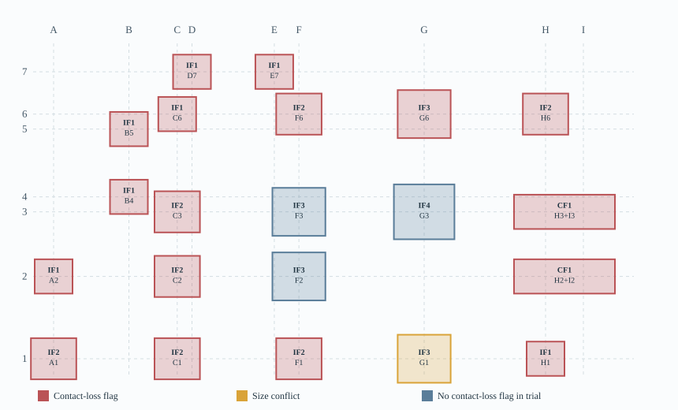

Geometry sensitivity and foundation screening
Two storey-offset interpretations with approximate surface-load transfer. Foundation pressures refer to the model support plane; they are not verified soil bearing pressures.
1 · Frame response and surface geometry
Six additional section changes were solved in both models. The downward offset case has 104 of 105 beam section candidates within the trial dimensions; GF-B49 still needs a new solution. Section assessment uses the modeled demands.
Reanalysis (2)
| Coordinate convention | Seismic weight kN | Static ULS B kN | T1 s | Raw ULS drift % | Existing beam candidates | Further resizing | Unresolved columns | Stair gross m3 |
|---|---|---|---|---|---|---|---|---|
| Upward offset baseline | 6874.3 | 1002.5 | 0.74358 | 0.54878 | 103 | 2 | 11 | 5.2625 |
| Downward offset sensitivity | 6748.7 | 984.19 | 0.74041 | 0.54239 | 104 | 1 | 11 | 3.8639 |
Stair coordinates (22)
| Convention | Surface | Story | Z min m | Z max m | Rise m | Area m2 |
|---|---|---|---|---|---|---|
| Upward offset baseline | GF-W2 | GF | 0 | 5.25 | 5.25 | 6.5067 |
| Upward offset baseline | GF-F13 | GF | 5.25 | 5.25 | 0 | 1.44 |
| Upward offset baseline | GF-W5 | GF | 3.894 | 5.25 | 1.356 | 2.6804 |
| Upward offset baseline | GF-F21 | GF | 3.894 | 3.894 | 0 | 1.44 |
| Upward offset baseline | GF-W6 | GF | 3.048 | 3.894 | 0.846 | 1.9179 |
| Upward offset baseline | FF-W2 | FF | 3.048 | 8.298 | 5.25 | 6.5067 |
| Upward offset baseline | FF-F13 | FF | 8.298 | 8.298 | 0 | 1.44 |
| Upward offset baseline | FF-W5 | FF | 6.942 | 8.298 | 1.356 | 2.6804 |
| Upward offset baseline | FF-F21 | FF | 6.942 | 6.942 | 0 | 1.44 |
| Upward offset baseline | FF-W6 | FF | 6.096 | 6.942 | 0.846 | 1.9179 |
| Upward offset baseline | GF-W7 | GF | 0 | 3.048 | 3.048 | 6.5609 |
| Downward offset sensitivity | GF-W2 | GF | 0 | 0.846 | 0.846 | 1.9179 |
| Downward offset sensitivity | GF-F13 | GF | 0.846 | 0.846 | 0 | 1.44 |
| Downward offset sensitivity | GF-W5 | GF | 0.846 | 2.202 | 1.356 | 2.6804 |
| Downward offset sensitivity | GF-F21 | GF | 2.202 | 2.202 | 0 | 1.44 |
| Downward offset sensitivity | GF-W6 | GF | 2.202 | 3.048 | 0.846 | 1.9179 |
| Downward offset sensitivity | FF-W2 | FF | 3.048 | 3.894 | 0.846 | 1.9179 |
| Downward offset sensitivity | FF-F13 | FF | 3.894 | 3.894 | 0 | 1.44 |
| Downward offset sensitivity | FF-W5 | FF | 3.894 | 5.25 | 1.356 | 2.6804 |
| Downward offset sensitivity | FF-F21 | FF | 5.25 | 5.25 | 0 | 1.44 |
| Downward offset sensitivity | FF-W6 | FF | 5.25 | 6.096 | 0.846 | 1.9179 |
| Downward offset sensitivity | GF-W7 | GF | 0 | 3.048 | 3.048 | 6.5609 |
Surface geometry (230)
| Convention | Surface | Story | Kind | Z min m | Z max m | Warp m | Valid projected polygon | Outside assigned story | Scope |
|---|---|---|---|---|---|---|---|---|---|
| Upward offset baseline | GF-F4 | GF | slab | 3.048 | 3.048 | 0 | True | False | Geometry representation without shell stiffness |
| Upward offset baseline | GF-F16 | GF | slab | 3.048 | 3.048 | 0 | True | False | Geometry representation without shell stiffness |
| Upward offset baseline | GF-F20 | GF | slab | 3.048 | 3.048 | 0 | True | False | Geometry representation without shell stiffness |
| Upward offset baseline | GF-F25 | GF | slab | 3.048 | 3.048 | 0 | True | False | Geometry representation without shell stiffness |
| Upward offset baseline | GF-F26 | GF | slab | 3.048 | 3.048 | 0 | True | False | Geometry representation without shell stiffness |
| Upward offset baseline | GF-F27 | GF | slab | 3.048 | 3.048 | 0 | True | False | Geometry representation without shell stiffness |
| Upward offset baseline | GF-F34 | GF | slab | 3.048 | 3.048 | 0 | True | False | Geometry representation without shell stiffness |
| Upward offset baseline | FF-F4 | FF | slab | 6.096 | 6.096 | 0 | True | False | Geometry representation without shell stiffness |
| Upward offset baseline | FF-F34 | FF | slab | 6.096 | 6.096 | 0 | True | False | Geometry representation without shell stiffness |
| Upward offset baseline | FF-F7 | FF | slab | 6.096 | 6.096 | 0 | True | False | Geometry representation without shell stiffness |
| Upward offset baseline | FF-F36 | FF | slab | 6.096 | 6.096 | 0 | True | False | Geometry representation without shell stiffness |
| Upward offset baseline | FF-F25 | FF | slab | 6.096 | 6.096 | 0 | True | False | Geometry representation without shell stiffness |
| Upward offset baseline | FF-F20 | FF | slab | 6.096 | 6.096 | 0 | True | False | Geometry representation without shell stiffness |
| Upward offset baseline | FF-F26 | FF | slab | 6.096 | 6.096 | 0 | True | False | Geometry representation without shell stiffness |
| Upward offset baseline | TF-F16 | TF | slab | 9.144 | 9.144 | 0 | True | False | Geometry representation without shell stiffness |
| Upward offset baseline | TF-F36 | TF | slab | 9.144 | 9.144 | 0 | True | False | Geometry representation without shell stiffness |
| Upward offset baseline | TF-F5 | TF | slab | 9.144 | 9.144 | 0 | True | False | Geometry representation without shell stiffness |
| Upward offset baseline | TF-F34 | TF | slab | 9.144 | 9.144 | 0 | True | False | Geometry representation without shell stiffness |
| Upward offset baseline | TF-F31 | TF | slab | 9.144 | 9.144 | 0 | True | False | Geometry representation without shell stiffness |
| Upward offset baseline | TF-F10 | TF | slab | 9.144 | 9.144 | 0 | True | False | Geometry representation without shell stiffness |
| Upward offset baseline | TF-F11 | TF | slab | 9.144 | 9.144 | 0 | True | False | Geometry representation without shell stiffness |
| Upward offset baseline | TF-F12 | TF | slab | 9.144 | 9.144 | 0 | True | False | Geometry representation without shell stiffness |
| Upward offset baseline | TF-F14 | TF | slab | 9.144 | 9.144 | 0 | True | False | Geometry representation without shell stiffness |
| Upward offset baseline | FF-W3 | FF | slab | 3.048 | 8.5529 | 0 | True | True | Outside assigned storey |
| Upward offset baseline | FF-W4 | FF | slab | 3.048 | 8.5529 | 0 | True | True | Outside assigned storey |
| Upward offset baseline | GF-F2 | GF | slab | 3.048 | 3.048 | 0 | True | False | Geometry representation without shell stiffness |
| Upward offset baseline | GF-F3 | GF | slab | 3.048 | 3.048 | 0 | True | False | Geometry representation without shell stiffness |
| Upward offset baseline | GF-F37 | GF | slab | 3.048 | 3.048 | 0 | True | False | Geometry representation without shell stiffness |
| Upward offset baseline | GF-F23 | GF | slab | 3.048 | 3.048 | 0 | True | False | Geometry representation without shell stiffness |
| Upward offset baseline | GF-F9 | GF | slab | 3.048 | 3.048 | 0 | True | False | Geometry representation without shell stiffness |
| Upward offset baseline | GF-F15 | GF | slab | 3.048 | 3.048 | 0 | True | False | Geometry representation without shell stiffness |
| Upward offset baseline | GF-F17 | GF | slab | 3.048 | 3.048 | 0 | True | False | Geometry representation without shell stiffness |
| Upward offset baseline | GF-F18 | GF | slab | 3.048 | 3.048 | 0 | True | False | Geometry representation without shell stiffness |
| Upward offset baseline | GF-F8 | GF | slab | 3.048 | 3.048 | 0 | True | False | Geometry representation without shell stiffness |
| Upward offset baseline | GF-F22 | GF | slab | 3.048 | 3.048 | 0 | True | False | Geometry representation without shell stiffness |
| Upward offset baseline | TF-F29 | TF | slab | 9.144 | 9.144 | 0 | True | False | Geometry representation without shell stiffness |
| Upward offset baseline | TF-F3 | TF | slab | 9.144 | 9.144 | 0 | True | False | Geometry representation without shell stiffness |
| Upward offset baseline | TF-F37 | TF | slab | 9.144 | 9.144 | 0 | True | False | Geometry representation without shell stiffness |
| Upward offset baseline | TF-F23 | TF | slab | 9.144 | 9.144 | 0 | True | False | Geometry representation without shell stiffness |
| Upward offset baseline | TF-F9 | TF | slab | 9.144 | 9.144 | 0 | True | False | Geometry representation without shell stiffness |
| Upward offset baseline | TF-F15 | TF | slab | 9.144 | 9.144 | 0 | True | False | Geometry representation without shell stiffness |
| Upward offset baseline | TF-F17 | TF | slab | 9.144 | 9.144 | 0 | True | False | Geometry representation without shell stiffness |
| Upward offset baseline | TF-F18 | TF | slab | 9.144 | 9.144 | 0 | True | False | Geometry representation without shell stiffness |
| Upward offset baseline | TF-F8 | TF | slab | 9.144 | 9.144 | 0 | True | False | Geometry representation without shell stiffness |
| Upward offset baseline | TF-F22 | TF | slab | 9.144 | 9.144 | 0 | True | False | Geometry representation without shell stiffness |
| Upward offset baseline | FF-F3 | FF | slab | 6.096 | 6.096 | 0 | True | False | Geometry representation without shell stiffness |
| Upward offset baseline | FF-F37 | FF | slab | 6.096 | 6.096 | 0 | True | False | Geometry representation without shell stiffness |
| Upward offset baseline | FF-F46 | FF | slab | 6.096 | 6.096 | 0 | True | False | Geometry representation without shell stiffness |
| Upward offset baseline | FF-F9 | FF | slab | 6.096 | 6.096 | 0 | True | False | Geometry representation without shell stiffness |
| Upward offset baseline | FF-F15 | FF | slab | 6.096 | 6.096 | 0 | True | False | Geometry representation without shell stiffness |
| Upward offset baseline | FF-F17 | FF | slab | 6.096 | 6.096 | 0 | True | False | Geometry representation without shell stiffness |
| Upward offset baseline | FF-F18 | FF | slab | 6.096 | 6.096 | 0 | True | False | Geometry representation without shell stiffness |
| Upward offset baseline | FF-F8 | FF | slab | 6.096 | 6.096 | 0 | True | False | Geometry representation without shell stiffness |
| Upward offset baseline | FF-F22 | FF | slab | 6.096 | 6.096 | 0 | True | False | Geometry representation without shell stiffness |
| Upward offset baseline | FF-F47 | FF | slab | 6.096 | 6.096 | 0 | True | False | Geometry representation without shell stiffness |
| Upward offset baseline | FF-F29 | FF | slab | 6.096 | 6.096 | 0 | True | False | Geometry representation without shell stiffness |
| Upward offset baseline | FF-F30 | FF | slab | 6.096 | 6.096 | 0 | True | False | Geometry representation without shell stiffness |
| Upward offset baseline | FF-F24 | FF | slab | 6.096 | 6.096 | 0 | True | False | Geometry representation without shell stiffness |
| Upward offset baseline | FF-F28 | FF | slab | 6.096 | 6.096 | 0 | True | False | Geometry representation without shell stiffness |
| Upward offset baseline | FF-F51 | FF | slab | 6.096 | 6.096 | 0 | True | False | Geometry representation without shell stiffness |
| Upward offset baseline | FF-F57 | FF | slab | 6.096 | 6.096 | 0 | True | False | Geometry representation without shell stiffness |
| Upward offset baseline | TF-F51 | TF | slab | 9.144 | 9.144 | 0 | True | False | Geometry representation without shell stiffness |
| Upward offset baseline | TF-F38 | TF | slab | 9.144 | 9.144 | 0 | True | False | Geometry representation without shell stiffness |
| Upward offset baseline | TF-F57 | TF | slab | 9.144 | 9.144 | 0 | True | False | Geometry representation without shell stiffness |
| Upward offset baseline | TF-F48 | TF | slab | 9.144 | 9.144 | 0 | True | False | Geometry representation without shell stiffness |
| Upward offset baseline | TF-F40 | TF | slab | 9.144 | 9.144 | 0 | True | False | Geometry representation without shell stiffness |
| Upward offset baseline | TF-F1 | TF | slab | 9.144 | 9.144 | 0 | True | False | Geometry representation without shell stiffness |
| Upward offset baseline | TF-F41 | TF | slab | 9.144 | 9.144 | 0 | True | False | Geometry representation without shell stiffness |
| Upward offset baseline | TF-F65 | TF | slab | 9.144 | 9.144 | 0 | True | False | Geometry representation without shell stiffness |
| Upward offset baseline | TF-F69 | TF | slab | 9.144 | 9.144 | 0 | True | False | Geometry representation without shell stiffness |
| Upward offset baseline | TF-F45 | TF | slab | 9.144 | 9.144 | 0 | True | False | Geometry representation without shell stiffness |
| Upward offset baseline | GF-F35 | GF | slab | 3.048 | 3.048 | 0 | True | False | Geometry representation without shell stiffness |
| Upward offset baseline | GF-F39 | GF | slab | 3.048 | 3.048 | 0 | True | False | Geometry representation without shell stiffness |
| Upward offset baseline | GF-F42 | GF | slab | 3.048 | 3.048 | 0 | True | False | Geometry representation without shell stiffness |
| Upward offset baseline | GF-F43 | GF | slab | 3.048 | 3.048 | 0 | True | False | Geometry representation without shell stiffness |
| Upward offset baseline | GF-F52 | GF | slab | 3.048 | 3.048 | 0 | True | False | Geometry representation without shell stiffness |
| Upward offset baseline | GF-F53 | GF | slab | 3.048 | 3.048 | 0 | True | False | Geometry representation without shell stiffness |
| Upward offset baseline | GF-F56 | GF | slab | 3.048 | 3.048 | 0 | True | False | Geometry representation without shell stiffness |
| Upward offset baseline | FF-F56 | FF | slab | 6.096 | 6.096 | 0 | True | False | Geometry representation without shell stiffness |
| Upward offset baseline | GF-F61 | GF | slab | 3.048 | 3.048 | 0 | True | False | Geometry representation without shell stiffness |
| Upward offset baseline | GF-F62 | GF | slab | 3.048 | 3.048 | 0 | True | False | Geometry representation without shell stiffness |
| Upward offset baseline | GF-F63 | GF | slab | 3.048 | 3.048 | 0 | True | False | Geometry representation without shell stiffness |
| Upward offset baseline | GF-F64 | GF | slab | 3.048 | 3.048 | 0 | True | False | Geometry representation without shell stiffness |
| Upward offset baseline | FF-F66 | FF | slab | 6.096 | 6.096 | 0 | True | False | Geometry representation without shell stiffness |
| Upward offset baseline | FF-F67 | FF | slab | 6.096 | 6.096 | 0 | True | False | Geometry representation without shell stiffness |
| Upward offset baseline | FF-F68 | FF | slab | 6.096 | 6.096 | 0 | True | False | Geometry representation without shell stiffness |
| Upward offset baseline | FF-F71 | FF | slab | 6.096 | 6.096 | 0 | True | False | Geometry representation without shell stiffness |
| Upward offset baseline | FF-F73 | FF | slab | 6.096 | 6.096 | 0 | True | False | Geometry representation without shell stiffness |
| Upward offset baseline | FF-F89 | FF | slab | 6.096 | 6.096 | 0 | True | False | Geometry representation without shell stiffness |
| Upward offset baseline | FF-F75 | FF | slab | 6.096 | 6.096 | 0 | True | False | Geometry representation without shell stiffness |
| Upward offset baseline | FF-F78 | FF | slab | 6.096 | 6.096 | 0 | True | False | Geometry representation without shell stiffness |
| Upward offset baseline | FF-F79 | FF | slab | 6.096 | 6.096 | 0 | True | False | Geometry representation without shell stiffness |
| Upward offset baseline | FF-F81 | FF | slab | 6.096 | 6.096 | 0 | True | False | Geometry representation without shell stiffness |
| Upward offset baseline | FF-F83 | FF | slab | 6.096 | 6.096 | 0 | True | False | Geometry representation without shell stiffness |
| Upward offset baseline | FF-F84 | FF | slab | 6.096 | 6.096 | 0 | True | False | Geometry representation without shell stiffness |
| Upward offset baseline | FF-F85 | FF | slab | 6.096 | 6.096 | 0 | True | False | Geometry representation without shell stiffness |
| Upward offset baseline | FF-F86 | FF | slab | 6.096 | 6.096 | 0 | True | False | Geometry representation without shell stiffness |
| Upward offset baseline | FF-F87 | FF | slab | 6.096 | 6.096 | 0 | True | False | Geometry representation without shell stiffness |
| Upward offset baseline | FF-F88 | FF | slab | 6.096 | 6.096 | 0 | True | False | Geometry representation without shell stiffness |
| Upward offset baseline | TF-F54 | TF | slab | 9.144 | 9.144 | 0 | True | False | Geometry representation without shell stiffness |
| Upward offset baseline | TF-F55 | TF | slab | 9.144 | 9.144 | 0 | True | False | Geometry representation without shell stiffness |
| Upward offset baseline | GF-W2 | GF | stair | 0 | 5.25 | 0 | True | True | Outside assigned storey |
| Upward offset baseline | GF-F13 | GF | stair | 5.25 | 5.25 | 0 | True | True | Outside assigned storey |
| Upward offset baseline | GF-W5 | GF | stair | 3.894 | 5.25 | 0 | True | True | Outside assigned storey |
| Upward offset baseline | GF-F21 | GF | stair | 3.894 | 3.894 | 0 | True | True | Outside assigned storey |
| Upward offset baseline | GF-W6 | GF | stair | 3.048 | 3.894 | 0 | True | True | Outside assigned storey |
| Upward offset baseline | FF-W2 | FF | stair | 3.048 | 8.298 | 0 | True | True | Outside assigned storey |
| Upward offset baseline | FF-F13 | FF | stair | 8.298 | 8.298 | 0 | True | True | Outside assigned storey |
| Upward offset baseline | FF-W5 | FF | stair | 6.942 | 8.298 | 0 | True | True | Outside assigned storey |
| Upward offset baseline | FF-F21 | FF | stair | 6.942 | 6.942 | 0 | True | True | Outside assigned storey |
| Upward offset baseline | FF-W6 | FF | stair | 6.096 | 6.942 | 0 | True | True | Outside assigned storey |
| Upward offset baseline | TF-F47 | TF | slab | 9.144 | 9.144 | 0 | True | False | Geometry representation without shell stiffness |
| Upward offset baseline | GF-F32 | GF | slab | 3.048 | 3.048 | 0 | True | False | Geometry representation without shell stiffness |
| Upward offset baseline | GF-F33 | GF | slab | 3.048 | 3.048 | 0 | True | False | Geometry representation without shell stiffness |
| Upward offset baseline | GF-W7 | GF | stair | 0 | 3.048 | 0 | True | False | Geometry representation without shell stiffness |
| Downward offset sensitivity | GF-F4 | GF | slab | 3.048 | 3.048 | 0 | True | False | Geometry representation without shell stiffness |
| Downward offset sensitivity | GF-F16 | GF | slab | 3.048 | 3.048 | 0 | True | False | Geometry representation without shell stiffness |
| Downward offset sensitivity | GF-F20 | GF | slab | 3.048 | 3.048 | 0 | True | False | Geometry representation without shell stiffness |
| Downward offset sensitivity | GF-F25 | GF | slab | 3.048 | 3.048 | 0 | True | False | Geometry representation without shell stiffness |
| Downward offset sensitivity | GF-F26 | GF | slab | 3.048 | 3.048 | 0 | True | False | Geometry representation without shell stiffness |
| Downward offset sensitivity | GF-F27 | GF | slab | 3.048 | 3.048 | 0 | True | False | Geometry representation without shell stiffness |
| Downward offset sensitivity | GF-F34 | GF | slab | 3.048 | 3.048 | 0 | True | False | Geometry representation without shell stiffness |
| Downward offset sensitivity | FF-F4 | FF | slab | 6.096 | 6.096 | 0 | True | False | Geometry representation without shell stiffness |
| Downward offset sensitivity | FF-F34 | FF | slab | 6.096 | 6.096 | 0 | True | False | Geometry representation without shell stiffness |
| Downward offset sensitivity | FF-F7 | FF | slab | 6.096 | 6.096 | 0 | True | False | Geometry representation without shell stiffness |
| Downward offset sensitivity | FF-F36 | FF | slab | 6.096 | 6.096 | 0 | True | False | Geometry representation without shell stiffness |
| Downward offset sensitivity | FF-F25 | FF | slab | 6.096 | 6.096 | 0 | True | False | Geometry representation without shell stiffness |
| Downward offset sensitivity | FF-F20 | FF | slab | 6.096 | 6.096 | 0 | True | False | Geometry representation without shell stiffness |
| Downward offset sensitivity | FF-F26 | FF | slab | 6.096 | 6.096 | 0 | True | False | Geometry representation without shell stiffness |
| Downward offset sensitivity | TF-F16 | TF | slab | 9.144 | 9.144 | 0 | True | False | Geometry representation without shell stiffness |
| Downward offset sensitivity | TF-F36 | TF | slab | 9.144 | 9.144 | 0 | True | False | Geometry representation without shell stiffness |
| Downward offset sensitivity | TF-F5 | TF | slab | 9.144 | 9.144 | 0 | True | False | Geometry representation without shell stiffness |
| Downward offset sensitivity | TF-F34 | TF | slab | 9.144 | 9.144 | 0 | True | False | Geometry representation without shell stiffness |
| Downward offset sensitivity | TF-F31 | TF | slab | 9.144 | 9.144 | 0 | True | False | Geometry representation without shell stiffness |
| Downward offset sensitivity | TF-F10 | TF | slab | 9.144 | 9.144 | 0 | True | False | Geometry representation without shell stiffness |
| Downward offset sensitivity | TF-F11 | TF | slab | 9.144 | 9.144 | 0 | True | False | Geometry representation without shell stiffness |
| Downward offset sensitivity | TF-F12 | TF | slab | 9.144 | 9.144 | 0 | True | False | Geometry representation without shell stiffness |
| Downward offset sensitivity | TF-F14 | TF | slab | 9.144 | 9.144 | 0 | True | False | Geometry representation without shell stiffness |
| Downward offset sensitivity | FF-W3 | FF | slab | 3.048 | 3.6391 | 0 | True | False | Geometry representation without shell stiffness |
| Downward offset sensitivity | FF-W4 | FF | slab | 3.048 | 3.6391 | 0 | True | False | Geometry representation without shell stiffness |
| Downward offset sensitivity | GF-F2 | GF | slab | 3.048 | 3.048 | 0 | True | False | Geometry representation without shell stiffness |
| Downward offset sensitivity | GF-F3 | GF | slab | 3.048 | 3.048 | 0 | True | False | Geometry representation without shell stiffness |
| Downward offset sensitivity | GF-F37 | GF | slab | 3.048 | 3.048 | 0 | True | False | Geometry representation without shell stiffness |
| Downward offset sensitivity | GF-F23 | GF | slab | 3.048 | 3.048 | 0 | True | False | Geometry representation without shell stiffness |
| Downward offset sensitivity | GF-F9 | GF | slab | 3.048 | 3.048 | 0 | True | False | Geometry representation without shell stiffness |
| Downward offset sensitivity | GF-F15 | GF | slab | 3.048 | 3.048 | 0 | True | False | Geometry representation without shell stiffness |
| Downward offset sensitivity | GF-F17 | GF | slab | 3.048 | 3.048 | 0 | True | False | Geometry representation without shell stiffness |
| Downward offset sensitivity | GF-F18 | GF | slab | 3.048 | 3.048 | 0 | True | False | Geometry representation without shell stiffness |
| Downward offset sensitivity | GF-F8 | GF | slab | 3.048 | 3.048 | 0 | True | False | Geometry representation without shell stiffness |
| Downward offset sensitivity | GF-F22 | GF | slab | 3.048 | 3.048 | 0 | True | False | Geometry representation without shell stiffness |
| Downward offset sensitivity | TF-F29 | TF | slab | 9.144 | 9.144 | 0 | True | False | Geometry representation without shell stiffness |
| Downward offset sensitivity | TF-F3 | TF | slab | 9.144 | 9.144 | 0 | True | False | Geometry representation without shell stiffness |
| Downward offset sensitivity | TF-F37 | TF | slab | 9.144 | 9.144 | 0 | True | False | Geometry representation without shell stiffness |
| Downward offset sensitivity | TF-F23 | TF | slab | 9.144 | 9.144 | 0 | True | False | Geometry representation without shell stiffness |
| Downward offset sensitivity | TF-F9 | TF | slab | 9.144 | 9.144 | 0 | True | False | Geometry representation without shell stiffness |
| Downward offset sensitivity | TF-F15 | TF | slab | 9.144 | 9.144 | 0 | True | False | Geometry representation without shell stiffness |
| Downward offset sensitivity | TF-F17 | TF | slab | 9.144 | 9.144 | 0 | True | False | Geometry representation without shell stiffness |
| Downward offset sensitivity | TF-F18 | TF | slab | 9.144 | 9.144 | 0 | True | False | Geometry representation without shell stiffness |
| Downward offset sensitivity | TF-F8 | TF | slab | 9.144 | 9.144 | 0 | True | False | Geometry representation without shell stiffness |
| Downward offset sensitivity | TF-F22 | TF | slab | 9.144 | 9.144 | 0 | True | False | Geometry representation without shell stiffness |
| Downward offset sensitivity | FF-F3 | FF | slab | 6.096 | 6.096 | 0 | True | False | Geometry representation without shell stiffness |
| Downward offset sensitivity | FF-F37 | FF | slab | 6.096 | 6.096 | 0 | True | False | Geometry representation without shell stiffness |
| Downward offset sensitivity | FF-F46 | FF | slab | 6.096 | 6.096 | 0 | True | False | Geometry representation without shell stiffness |
| Downward offset sensitivity | FF-F9 | FF | slab | 6.096 | 6.096 | 0 | True | False | Geometry representation without shell stiffness |
| Downward offset sensitivity | FF-F15 | FF | slab | 6.096 | 6.096 | 0 | True | False | Geometry representation without shell stiffness |
| Downward offset sensitivity | FF-F17 | FF | slab | 6.096 | 6.096 | 0 | True | False | Geometry representation without shell stiffness |
| Downward offset sensitivity | FF-F18 | FF | slab | 6.096 | 6.096 | 0 | True | False | Geometry representation without shell stiffness |
| Downward offset sensitivity | FF-F8 | FF | slab | 6.096 | 6.096 | 0 | True | False | Geometry representation without shell stiffness |
| Downward offset sensitivity | FF-F22 | FF | slab | 6.096 | 6.096 | 0 | True | False | Geometry representation without shell stiffness |
| Downward offset sensitivity | FF-F47 | FF | slab | 6.096 | 6.096 | 0 | True | False | Geometry representation without shell stiffness |
| Downward offset sensitivity | FF-F29 | FF | slab | 6.096 | 6.096 | 0 | True | False | Geometry representation without shell stiffness |
| Downward offset sensitivity | FF-F30 | FF | slab | 6.096 | 6.096 | 0 | True | False | Geometry representation without shell stiffness |
| Downward offset sensitivity | FF-F24 | FF | slab | 6.096 | 6.096 | 0 | True | False | Geometry representation without shell stiffness |
| Downward offset sensitivity | FF-F28 | FF | slab | 6.096 | 6.096 | 0 | True | False | Geometry representation without shell stiffness |
| Downward offset sensitivity | FF-F51 | FF | slab | 6.096 | 6.096 | 0 | True | False | Geometry representation without shell stiffness |
| Downward offset sensitivity | FF-F57 | FF | slab | 6.096 | 6.096 | 0 | True | False | Geometry representation without shell stiffness |
| Downward offset sensitivity | TF-F51 | TF | slab | 9.144 | 9.144 | 0 | True | False | Geometry representation without shell stiffness |
| Downward offset sensitivity | TF-F38 | TF | slab | 9.144 | 9.144 | 0 | True | False | Geometry representation without shell stiffness |
| Downward offset sensitivity | TF-F57 | TF | slab | 9.144 | 9.144 | 0 | True | False | Geometry representation without shell stiffness |
| Downward offset sensitivity | TF-F48 | TF | slab | 9.144 | 9.144 | 0 | True | False | Geometry representation without shell stiffness |
| Downward offset sensitivity | TF-F40 | TF | slab | 9.144 | 9.144 | 0 | True | False | Geometry representation without shell stiffness |
| Downward offset sensitivity | TF-F1 | TF | slab | 9.144 | 9.144 | 0 | True | False | Geometry representation without shell stiffness |
| Downward offset sensitivity | TF-F41 | TF | slab | 9.144 | 9.144 | 0 | True | False | Geometry representation without shell stiffness |
| Downward offset sensitivity | TF-F65 | TF | slab | 9.144 | 9.144 | 0 | True | False | Geometry representation without shell stiffness |
| Downward offset sensitivity | TF-F69 | TF | slab | 9.144 | 9.144 | 0 | True | False | Geometry representation without shell stiffness |
| Downward offset sensitivity | TF-F45 | TF | slab | 9.144 | 9.144 | 0 | True | False | Geometry representation without shell stiffness |
| Downward offset sensitivity | GF-F35 | GF | slab | 3.048 | 3.048 | 0 | True | False | Geometry representation without shell stiffness |
| Downward offset sensitivity | GF-F39 | GF | slab | 3.048 | 3.048 | 0 | True | False | Geometry representation without shell stiffness |
| Downward offset sensitivity | GF-F42 | GF | slab | 3.048 | 3.048 | 0 | True | False | Geometry representation without shell stiffness |
| Downward offset sensitivity | GF-F43 | GF | slab | 3.048 | 3.048 | 0 | True | False | Geometry representation without shell stiffness |
| Downward offset sensitivity | GF-F52 | GF | slab | 3.048 | 3.048 | 0 | True | False | Geometry representation without shell stiffness |
| Downward offset sensitivity | GF-F53 | GF | slab | 3.048 | 3.048 | 0 | True | False | Geometry representation without shell stiffness |
| Downward offset sensitivity | GF-F56 | GF | slab | 3.048 | 3.048 | 0 | True | False | Geometry representation without shell stiffness |
| Downward offset sensitivity | FF-F56 | FF | slab | 6.096 | 6.096 | 0 | True | False | Geometry representation without shell stiffness |
| Downward offset sensitivity | GF-F61 | GF | slab | 3.048 | 3.048 | 0 | True | False | Geometry representation without shell stiffness |
| Downward offset sensitivity | GF-F62 | GF | slab | 3.048 | 3.048 | 0 | True | False | Geometry representation without shell stiffness |
| Downward offset sensitivity | GF-F63 | GF | slab | 3.048 | 3.048 | 0 | True | False | Geometry representation without shell stiffness |
| Downward offset sensitivity | GF-F64 | GF | slab | 3.048 | 3.048 | 0 | True | False | Geometry representation without shell stiffness |
| Downward offset sensitivity | FF-F66 | FF | slab | 6.096 | 6.096 | 0 | True | False | Geometry representation without shell stiffness |
| Downward offset sensitivity | FF-F67 | FF | slab | 6.096 | 6.096 | 0 | True | False | Geometry representation without shell stiffness |
| Downward offset sensitivity | FF-F68 | FF | slab | 6.096 | 6.096 | 0 | True | False | Geometry representation without shell stiffness |
| Downward offset sensitivity | FF-F71 | FF | slab | 6.096 | 6.096 | 0 | True | False | Geometry representation without shell stiffness |
| Downward offset sensitivity | FF-F73 | FF | slab | 6.096 | 6.096 | 0 | True | False | Geometry representation without shell stiffness |
| Downward offset sensitivity | FF-F89 | FF | slab | 6.096 | 6.096 | 0 | True | False | Geometry representation without shell stiffness |
| Downward offset sensitivity | FF-F75 | FF | slab | 6.096 | 6.096 | 0 | True | False | Geometry representation without shell stiffness |
| Downward offset sensitivity | FF-F78 | FF | slab | 6.096 | 6.096 | 0 | True | False | Geometry representation without shell stiffness |
| Downward offset sensitivity | FF-F79 | FF | slab | 6.096 | 6.096 | 0 | True | False | Geometry representation without shell stiffness |
| Downward offset sensitivity | FF-F81 | FF | slab | 6.096 | 6.096 | 0 | True | False | Geometry representation without shell stiffness |
| Downward offset sensitivity | FF-F83 | FF | slab | 6.096 | 6.096 | 0 | True | False | Geometry representation without shell stiffness |
| Downward offset sensitivity | FF-F84 | FF | slab | 6.096 | 6.096 | 0 | True | False | Geometry representation without shell stiffness |
| Downward offset sensitivity | FF-F85 | FF | slab | 6.096 | 6.096 | 0 | True | False | Geometry representation without shell stiffness |
| Downward offset sensitivity | FF-F86 | FF | slab | 6.096 | 6.096 | 0 | True | False | Geometry representation without shell stiffness |
| Downward offset sensitivity | FF-F87 | FF | slab | 6.096 | 6.096 | 0 | True | False | Geometry representation without shell stiffness |
| Downward offset sensitivity | FF-F88 | FF | slab | 6.096 | 6.096 | 0 | True | False | Geometry representation without shell stiffness |
| Downward offset sensitivity | TF-F54 | TF | slab | 9.144 | 9.144 | 0 | True | False | Geometry representation without shell stiffness |
| Downward offset sensitivity | TF-F55 | TF | slab | 9.144 | 9.144 | 0 | True | False | Geometry representation without shell stiffness |
| Downward offset sensitivity | GF-W2 | GF | stair | 0 | 0.846 | 0 | True | False | Geometry representation without shell stiffness |
| Downward offset sensitivity | GF-F13 | GF | stair | 0.846 | 0.846 | 0 | True | False | Geometry representation without shell stiffness |
| Downward offset sensitivity | GF-W5 | GF | stair | 0.846 | 2.202 | 0 | True | False | Geometry representation without shell stiffness |
| Downward offset sensitivity | GF-F21 | GF | stair | 2.202 | 2.202 | 0 | True | False | Geometry representation without shell stiffness |
| Downward offset sensitivity | GF-W6 | GF | stair | 2.202 | 3.048 | 0 | True | False | Geometry representation without shell stiffness |
| Downward offset sensitivity | FF-W2 | FF | stair | 3.048 | 3.894 | 0 | True | False | Geometry representation without shell stiffness |
| Downward offset sensitivity | FF-F13 | FF | stair | 3.894 | 3.894 | 0 | True | False | Geometry representation without shell stiffness |
| Downward offset sensitivity | FF-W5 | FF | stair | 3.894 | 5.25 | 0 | True | False | Geometry representation without shell stiffness |
| Downward offset sensitivity | FF-F21 | FF | stair | 5.25 | 5.25 | 0 | True | False | Geometry representation without shell stiffness |
| Downward offset sensitivity | FF-W6 | FF | stair | 5.25 | 6.096 | 0 | True | False | Geometry representation without shell stiffness |
| Downward offset sensitivity | TF-F47 | TF | slab | 9.144 | 9.144 | 0 | True | False | Geometry representation without shell stiffness |
| Downward offset sensitivity | GF-F32 | GF | slab | 3.048 | 3.048 | 0 | True | False | Geometry representation without shell stiffness |
| Downward offset sensitivity | GF-F33 | GF | slab | 3.048 | 3.048 | 0 | True | False | Geometry representation without shell stiffness |
| Downward offset sensitivity | GF-W7 | GF | stair | 0 | 3.048 | 0 | True | False | Geometry representation without shell stiffness |
2 · Beam and column section studies
Eleven unresolved column screens contain tension samples. A compression-only interaction routine cannot accept those cases. Joint endpoint connectivity is not a joint strength check.
Beam candidates (210)
| Convention | Member | Section | L m | Current b mm | Current h mm | Trial b mm | Trial h mm | Bars/face | Dia mm | As mm2/face | Equivalent M kNm | Capacity kNm | Equivalent shear MPa | Link pitch mm | Straight kg | Gross m3 | Scope |
|---|---|---|---|---|---|---|---|---|---|---|---|---|---|---|---|---|---|
| Upward offset baseline | GF-B3 | beam 12*16 | 4.9 | 300 | 400 | 300 | 400 | 6 | 12 | 678.58 | 92.678 | 95.807 | 0.773 | 70 | 52.203 | 0.588 | Existing geometry trial |
| Upward offset baseline | GF-B9 | beam 12*16 | 4.823 | 300 | 400 | 300 | 400 | 5 | 16 | 1005.3 | 117.11 | 139.2 | 1.817 | 85 | 76.123 | 0.5788 | Existing geometry trial |
| Upward offset baseline | GF-B18 | beam 12*16 | 4.965 | 300 | 400 | 300 | 400 | 6 | 12 | 678.58 | 85.829 | 95.807 | 0.569 | 70 | 52.896 | 0.5958 | Existing geometry trial |
| Upward offset baseline | GF-B20 | beam 12*16 | 4.812 | 300 | 400 | 300 | 400 | 6 | 12 | 678.58 | 87.498 | 95.807 | 0.587 | 70 | 51.266 | 0.5774 | Existing geometry trial |
| Upward offset baseline | GF-B22 | beam 12*16 | 3.6 | 300 | 400 | 300 | 400 | 4 | 16 | 804.25 | 109.41 | 111.91 | 1.091 | 85 | 45.456 | 0.432 | Existing geometry trial |
| Upward offset baseline | GF-B23 | beam 12*16 | 2.825 | 300 | 400 | 300 | 400 | 5 | 16 | 1005.3 | 118.78 | 139.2 | 1.226 | 85 | 44.588 | 0.339 | Existing geometry trial |
| Upward offset baseline | GF-B24 | beam 12*16 | 4.275 | 300 | 400 | 300 | 400 | 4 | 16 | 804.25 | 99.986 | 111.91 | 0.687 | 85 | 53.979 | 0.513 | Existing geometry trial |
| Upward offset baseline | GF-B25 | beam 12*16 | 4.812 | 300 | 400 | 300 | 400 | 3 | 16 | 603.19 | 84.496 | 84.61 | 0.551 | 85 | 45.57 | 0.5774 | Existing geometry trial |
| Upward offset baseline | GF-B26 | beam 12*16 | 4.965 | 350 | 450 | 350 | 450 | 6 | 16 | 1206.4 | 187.76 | 193.17 | 2.773 | 55 | 94.037 | 0.782 | Existing geometry trial |
| Upward offset baseline | GF-B27 | beam 12*16 | 4.823 | 300 | 400 | 300 | 400 | 4 | 16 | 804.25 | 105.12 | 111.91 | 2.578 | 70 | 60.899 | 0.5788 | Existing geometry trial |
| Upward offset baseline | GF-B28 | beam 12*16 | 4.275 | 300 | 400 | 300 | 400 | 4 | 16 | 804.25 | 100.56 | 111.91 | 2.324 | 80 | 53.979 | 0.513 | Existing geometry trial |
| Upward offset baseline | GF-B30 | beam 12*16 | 2.825 | 300 | 400 | 300 | 400 | 5 | 16 | 1005.3 | 124.28 | 139.2 | 1.621 | 85 | 44.588 | 0.339 | Existing geometry trial |
| Upward offset baseline | GF-B31 | beam 12*16 | 3.6 | 300 | 400 | 300 | 400 | 6 | 12 | 678.58 | 90.472 | 95.807 | 0.661 | 70 | 38.354 | 0.432 | Existing geometry trial |
| Upward offset baseline | GF-B32 | beam 12*16 | 4.9 | 300 | 400 | 300 | 400 | 6 | 12 | 678.58 | 85.376 | 95.807 | 0.587 | 70 | 52.203 | 0.588 | Existing geometry trial |
| Upward offset baseline | GF-B33 | beam 12*16 | 3.6 | 300 | 400 | 300 | 400 | 4 | 16 | 804.25 | 97.081 | 111.91 | 0.663 | 85 | 45.456 | 0.432 | Existing geometry trial |
| Upward offset baseline | GF-B34 | beam 12*16 | 4.275 | 300 | 400 | 300 | 400 | 6 | 12 | 678.58 | 87.139 | 95.807 | 1.093 | 70 | 45.545 | 0.513 | Existing geometry trial |
| Upward offset baseline | GF-B35 | beam 12*16 | 2.825 | 300 | 400 | 300 | 400 | 5 | 16 | 1005.3 | 113.04 | 139.2 | 1.365 | 85 | 44.588 | 0.339 | Existing geometry trial |
| Upward offset baseline | GF-B36 | beam 12*16 | 3.6 | 300 | 400 | 300 | 400 | 6 | 12 | 678.58 | 89 | 95.807 | 0.77 | 70 | 38.354 | 0.432 | Existing geometry trial |
| Upward offset baseline | GF-B42 | beam 12*16 | 4.275 | 300 | 400 | 300 | 400 | 6 | 12 | 678.58 | 84.638 | 95.807 | 0.625 | 70 | 45.545 | 0.513 | Existing geometry trial |
| Upward offset baseline | GF-B45 | beam 12*16 | 9.777 | 300 | 550 | 300 | 550 | 6 | 16 | 1206.4 | 222.1 | 245.17 | 0.757 | 95 | 185.18 | 1.6132 | Existing geometry trial |
| Upward offset baseline | GF-B46 | beam 12*16 | 4.823 | 300 | 400 | 300 | 400 | 4 | 16 | 804.25 | 111.89 | 111.91 | 1.247 | 85 | 60.899 | 0.5788 | Existing geometry trial |
| Upward offset baseline | GF-B47 | beam 12*16 | 4.823 | 300 | 400 | 300 | 400 | 6 | 12 | 678.58 | 85.983 | 95.807 | 0.622 | 70 | 51.383 | 0.5788 | Existing geometry trial |
| Upward offset baseline | GF-B49 | beam 12*16 | 4.965 | 300 | 500 | 300 | 550 | 5 | 16 | 1005.3 | 193.26 | 204.76 | 2.729 | 65 | 78.364 | 0.8192 | Changed geometry; reanalysis required |
| Upward offset baseline | GF-B52 | beam 12*16 | 4.812 | 300 | 400 | 300 | 400 | 5 | 12 | 565.49 | 65.286 | 80.247 | 0.357 | 70 | 42.722 | 0.5774 | Existing geometry trial |
| Upward offset baseline | GF-B53 | BEAM 9*12 | 1.915 | 228.6 | 304.8 | 228.6 | 304.8 | 4 | 12 | 452.39 | 42.616 | 45.38 | 0.755 | 65 | 13.601 | 0.1334 | Existing geometry trial |
| Upward offset baseline | GF-B54 | BEAM 9*12 | 2.965 | 228.6 | 304.8 | 228.6 | 304.8 | 2 | 16 | 402.12 | 36.577 | 40.014 | 0.481 | 65 | 18.719 | 0.2066 | Existing geometry trial |
| Upward offset baseline | GF-B55 | BEAM 9*12 | 1.915 | 228.6 | 304.8 | 228.6 | 304.8 | 4 | 12 | 452.39 | 43.711 | 45.38 | 0.756 | 65 | 13.601 | 0.1334 | Existing geometry trial |
| Upward offset baseline | GF-B56 | BEAM 9*12 | 1.85 | 228.6 | 304.8 | 228.6 | 304.8 | 2 | 16 | 402.12 | 36.333 | 40.014 | 0.683 | 65 | 11.68 | 0.1289 | Existing geometry trial |
| Upward offset baseline | GF-B58 | BEAM 9*12 | 1.85 | 228.6 | 304.8 | 228.6 | 304.8 | 3 | 12 | 339.29 | 33.402 | 34.49 | 0.599 | 65 | 9.855 | 0.1289 | Existing geometry trial |
| Upward offset baseline | TF-B3 | beam 9*16 | 4.9 | 228.6 | 431.8 | 228.6 | 431.8 | 3 | 12 | 339.29 | 46.406 | 53.225 | 0.691 | 70 | 26.102 | 0.4837 | Existing geometry trial |
| Upward offset baseline | TF-B9 | beam 9*16 | 4.823 | 228.6 | 431.8 | 228.6 | 431.8 | 3 | 12 | 339.29 | 36.574 | 53.225 | 0.272 | 70 | 25.692 | 0.4761 | Existing geometry trial |
| Upward offset baseline | TF-B18 | beam 9*16 | 4.965 | 228.6 | 431.8 | 228.6 | 431.8 | 3 | 12 | 339.29 | 40.089 | 53.225 | 0.469 | 70 | 26.448 | 0.4901 | Existing geometry trial |
| Upward offset baseline | TF-B20 | beam 9*16 | 4.812 | 228.6 | 431.8 | 228.6 | 431.8 | 3 | 12 | 339.29 | 40.596 | 53.225 | 0.434 | 70 | 25.633 | 0.475 | Existing geometry trial |
| Upward offset baseline | TF-B22 | beam 9*16 | 3.6 | 228.6 | 431.8 | 228.6 | 431.8 | 3 | 12 | 339.29 | 46.969 | 53.225 | 0.407 | 70 | 19.177 | 0.3554 | Existing geometry trial |
| Upward offset baseline | TF-B23 | beam 9*16 | 2.825 | 228.6 | 431.8 | 228.6 | 431.8 | 3 | 12 | 339.29 | 48.615 | 53.225 | 0.441 | 70 | 15.048 | 0.2789 | Existing geometry trial |
| Upward offset baseline | TF-B24 | beam 9*16 | 4.275 | 228.6 | 431.8 | 228.6 | 431.8 | 3 | 12 | 339.29 | 47.633 | 53.225 | 0.363 | 70 | 22.772 | 0.422 | Existing geometry trial |
| Upward offset baseline | TF-B26 | beam 9*16 | 4.965 | 228.6 | 431.8 | 228.6 | 431.8 | 2 | 16 | 402.12 | 57.562 | 62.219 | 1.123 | 95 | 31.346 | 0.4901 | Existing geometry trial |
| Upward offset baseline | TF-B30 | beam 9*16 | 2.825 | 228.6 | 431.8 | 228.6 | 431.8 | 2 | 16 | 402.12 | 55.258 | 62.219 | 0.475 | 95 | 17.835 | 0.2789 | Existing geometry trial |
| Upward offset baseline | TF-B31 | beam 9*16 | 3.6 | 228.6 | 431.8 | 228.6 | 431.8 | 3 | 12 | 339.29 | 43.347 | 53.225 | 0.327 | 70 | 19.177 | 0.3554 | Existing geometry trial |
| Upward offset baseline | TF-B32 | beam 9*16 | 4.9 | 228.6 | 431.8 | 228.6 | 431.8 | 3 | 12 | 339.29 | 42.901 | 53.225 | 0.331 | 70 | 26.102 | 0.4837 | Existing geometry trial |
| Upward offset baseline | TF-B33 | beam 9*16 | 3.6 | 228.6 | 431.8 | 228.6 | 431.8 | 3 | 12 | 339.29 | 49.212 | 53.225 | 0.383 | 70 | 19.177 | 0.3554 | Existing geometry trial |
| Upward offset baseline | TF-B34 | beam 9*16 | 4.275 | 228.6 | 431.8 | 228.6 | 431.8 | 3 | 12 | 339.29 | 39.83 | 53.225 | 0.423 | 70 | 22.772 | 0.422 | Existing geometry trial |
| Upward offset baseline | TF-B35 | beam 9*16 | 2.825 | 228.6 | 431.8 | 228.6 | 431.8 | 3 | 12 | 339.29 | 43.901 | 53.225 | 0.417 | 70 | 15.048 | 0.2789 | Existing geometry trial |
| Upward offset baseline | TF-B36 | beam 9*16 | 3.6 | 228.6 | 431.8 | 228.6 | 431.8 | 3 | 12 | 339.29 | 41.153 | 53.225 | 0.334 | 70 | 19.177 | 0.3554 | Existing geometry trial |
| Upward offset baseline | TF-B42 | beam 9*16 | 4.275 | 228.6 | 431.8 | 228.6 | 431.8 | 3 | 12 | 339.29 | 44.925 | 53.225 | 0.272 | 70 | 22.772 | 0.422 | Existing geometry trial |
| Upward offset baseline | TF-B44 | beam 9*16 | 6.425 | 228.6 | 431.8 | 228.6 | 431.8 | 4 | 16 | 804.25 | 115.36 | 122.38 | 1.009 | 95 | 81.126 | 0.6342 | Existing geometry trial |
| Upward offset baseline | TF-B45 | beam 9*16 | 9.777 | 228.6 | 431.8 | 228.6 | 431.8 | 3 | 12 | 339.29 | 36.144 | 53.225 | 0.193 | 70 | 52.081 | 0.9651 | Existing geometry trial |
| Upward offset baseline | TF-B46 | beam 9*16 | 4.823 | 228.6 | 431.8 | 228.6 | 431.8 | 2 | 12 | 226.19 | 35.354 | 36.047 | 0.229 | 70 | 17.128 | 0.4761 | Existing geometry trial |
| Upward offset baseline | TF-B47 | beam 9*16 | 4.823 | 228.6 | 431.8 | 228.6 | 431.8 | 3 | 12 | 339.29 | 44.461 | 53.225 | 0.395 | 70 | 25.692 | 0.4761 | Existing geometry trial |
| Upward offset baseline | TF-B49 | beam 9*16 | 4.965 | 228.6 | 431.8 | 228.6 | 431.8 | 2 | 16 | 402.12 | 56.179 | 62.219 | 1.288 | 95 | 31.346 | 0.4901 | Existing geometry trial |
| Upward offset baseline | TF-B52 | beam 9*16 | 4.812 | 228.6 | 431.8 | 228.6 | 431.8 | 3 | 12 | 339.29 | 38.743 | 53.225 | 0.44 | 70 | 25.633 | 0.475 | Existing geometry trial |
| Upward offset baseline | TF-B13 | BEAM 9*12 | 1.5 | 228.6 | 304.8 | 228.6 | 304.8 | 3 | 12 | 339.29 | 25.784 | 34.49 | 0.639 | 65 | 7.99 | 0.1045 | Existing geometry trial |
| Upward offset baseline | TF-B12 | BEAM 9*12 | 2.825 | 228.6 | 304.8 | 228.6 | 304.8 | 2 | 12 | 226.19 | 23.155 | 23.557 | 0.333 | 65 | 10.032 | 0.1968 | Existing geometry trial |
| Upward offset baseline | TF-B61 | beam 9*16 | 1.5 | 228.6 | 431.8 | 228.6 | 431.8 | 2 | 16 | 402.12 | 57.261 | 62.219 | 0.921 | 95 | 9.47 | 0.1481 | Existing geometry trial |
| Upward offset baseline | FF-B3 | beam 9*16 | 4.9 | 228.6 | 431.8 | 228.6 | 431.8 | 3 | 16 | 603.19 | 80.367 | 92.305 | 0.89 | 95 | 46.403 | 0.4837 | Existing geometry trial |
| Upward offset baseline | FF-B9 | beam 9*16 | 4.823 | 228.6 | 431.8 | 228.6 | 431.8 | 3 | 16 | 603.19 | 82.272 | 92.305 | 0.677 | 95 | 45.674 | 0.4761 | Existing geometry trial |
| Upward offset baseline | FF-B18 | beam 9*16 | 4.965 | 228.6 | 431.8 | 228.6 | 431.8 | 3 | 16 | 603.19 | 81.772 | 92.305 | 0.661 | 95 | 47.019 | 0.4901 | Existing geometry trial |
| Upward offset baseline | FF-B20 | beam 9*16 | 4.812 | 228.6 | 431.8 | 228.6 | 431.8 | 3 | 16 | 603.19 | 76.365 | 92.305 | 0.615 | 95 | 45.57 | 0.475 | Existing geometry trial |
| Upward offset baseline | FF-B22 | beam 9*16 | 3.6 | 228.6 | 431.8 | 228.6 | 431.8 | 3 | 16 | 603.19 | 91.255 | 92.305 | 1.026 | 95 | 34.092 | 0.3554 | Existing geometry trial |
| Upward offset baseline | FF-B23 | beam 9*16 | 2.825 | 228.6 | 431.8 | 228.6 | 431.8 | 4 | 16 | 804.25 | 103.95 | 122.38 | 1.207 | 95 | 35.67 | 0.2789 | Existing geometry trial |
| Upward offset baseline | FF-B24 | beam 9*16 | 4.275 | 228.6 | 431.8 | 228.6 | 431.8 | 3 | 16 | 603.19 | 86.092 | 92.305 | 0.712 | 95 | 40.484 | 0.422 | Existing geometry trial |
| Upward offset baseline | FF-B25 | beam 9*16 | 4.812 | 228.6 | 431.8 | 228.6 | 431.8 | 3 | 16 | 603.19 | 90.936 | 92.305 | 1.787 | 95 | 45.57 | 0.475 | Existing geometry trial |
| Upward offset baseline | FF-B26 | beam 9*16 | 4.965 | 300 | 500 | 300 | 550 | 5 | 16 | 1005.3 | 190.48 | 204.76 | 2.547 | 70 | 78.364 | 0.8192 | Changed geometry; reanalysis required |
| Upward offset baseline | FF-B27 | beam 9*16 | 4.823 | 300 | 450 | 300 | 450 | 5 | 16 | 1005.3 | 135.16 | 161.06 | 2.211 | 85 | 76.123 | 0.6511 | Existing geometry trial |
| Upward offset baseline | FF-B28 | beam 9*16 | 4.275 | 300 | 450 | 300 | 450 | 4 | 16 | 804.25 | 128.24 | 129.39 | 1.791 | 95 | 53.979 | 0.5771 | Existing geometry trial |
| Upward offset baseline | FF-B30 | beam 9*16 | 2.825 | 228.6 | 431.8 | 228.6 | 431.8 | 3 | 16 | 603.19 | 78.144 | 92.305 | 0.705 | 95 | 26.753 | 0.2789 | Existing geometry trial |
| Upward offset baseline | FF-B31 | beam 9*16 | 3.6 | 228.6 | 431.8 | 228.6 | 431.8 | 3 | 16 | 603.19 | 79.655 | 92.305 | 0.656 | 95 | 34.092 | 0.3554 | Existing geometry trial |
| Upward offset baseline | FF-B32 | beam 9*16 | 4.9 | 228.6 | 431.8 | 228.6 | 431.8 | 3 | 16 | 603.19 | 76.454 | 92.305 | 0.635 | 95 | 46.403 | 0.4837 | Existing geometry trial |
| Upward offset baseline | FF-B33 | beam 9*16 | 3.6 | 228.6 | 431.8 | 228.6 | 431.8 | 3 | 16 | 603.19 | 85.548 | 92.305 | 0.724 | 95 | 34.092 | 0.3554 | Existing geometry trial |
| Upward offset baseline | FF-B34 | beam 9*16 | 4.275 | 228.6 | 431.8 | 228.6 | 431.8 | 4 | 16 | 804.25 | 103.52 | 122.38 | 2.002 | 95 | 53.979 | 0.422 | Existing geometry trial |
| Upward offset baseline | FF-B35 | beam 9*16 | 2.825 | 228.6 | 431.8 | 228.6 | 431.8 | 3 | 16 | 603.19 | 81.377 | 92.305 | 0.914 | 95 | 26.753 | 0.2789 | Existing geometry trial |
| Upward offset baseline | FF-B36 | beam 9*16 | 3.6 | 228.6 | 431.8 | 228.6 | 431.8 | 3 | 16 | 603.19 | 83.507 | 92.305 | 0.965 | 95 | 34.092 | 0.3554 | Existing geometry trial |
| Upward offset baseline | FF-B42 | beam 9*16 | 4.275 | 228.6 | 431.8 | 228.6 | 431.8 | 3 | 16 | 603.19 | 74.764 | 92.305 | 0.784 | 95 | 40.484 | 0.422 | Existing geometry trial |
| Upward offset baseline | FF-B45 | beam 9*16 | 9.777 | 350 | 600 | 350 | 600 | 7 | 16 | 1407.4 | 297.38 | 316.63 | 1.273 | 95 | 216.04 | 2.0532 | Existing geometry trial |
| Upward offset baseline | FF-B46 | beam 9*16 | 4.823 | 228.6 | 431.8 | 228.6 | 431.8 | 4 | 16 | 804.25 | 105.05 | 122.38 | 2.018 | 95 | 60.899 | 0.4761 | Existing geometry trial |
| Upward offset baseline | FF-B49 | beam 9*16 | 4.965 | 300 | 500 | 300 | 500 | 5 | 16 | 1005.3 | 181.43 | 182.91 | 2.769 | 65 | 78.364 | 0.7447 | Existing geometry trial |
| Upward offset baseline | FF-B52 | beam 9*16 | 4.812 | 228.6 | 431.8 | 228.6 | 431.8 | 3 | 16 | 603.19 | 74.304 | 92.305 | 0.721 | 95 | 45.57 | 0.475 | Existing geometry trial |
| Upward offset baseline | FF-B53 | BEAM 9*12 | 1.915 | 228.6 | 304.8 | 228.6 | 304.8 | 3 | 12 | 339.29 | 34.003 | 34.49 | 0.617 | 65 | 10.201 | 0.1334 | Existing geometry trial |
| Upward offset baseline | FF-B54 | BEAM 9*12 | 2.965 | 228.6 | 304.8 | 228.6 | 304.8 | 3 | 12 | 339.29 | 30.758 | 34.49 | 0.423 | 65 | 15.794 | 0.2066 | Existing geometry trial |
| Upward offset baseline | FF-B55 | BEAM 9*12 | 1.915 | 228.6 | 304.8 | 228.6 | 304.8 | 3 | 12 | 339.29 | 31.603 | 34.49 | 0.563 | 65 | 10.201 | 0.1334 | Existing geometry trial |
| Upward offset baseline | FF-B13 | BEAM 9*12 | 1.5 | 228.6 | 304.8 | 228.6 | 304.8 | 4 | 12 | 452.39 | 45.346 | 45.38 | 1.021 | 65 | 10.654 | 0.1045 | Existing geometry trial |
| Upward offset baseline | FF-B12 | BEAM 9*12 | 2.825 | 228.6 | 304.8 | 228.6 | 304.8 | 2 | 16 | 402.12 | 36.642 | 40.014 | 0.502 | 65 | 17.835 | 0.1968 | Existing geometry trial |
| Upward offset baseline | FF-B61 | beam 9*16 | 1.5 | 228.6 | 431.8 | 228.6 | 431.8 | 4 | 16 | 804.25 | 106.36 | 122.38 | 1.442 | 95 | 18.94 | 0.1481 | Existing geometry trial |
| Upward offset baseline | GF-B57 | BEAM 9*12 | 3.263 | 228.6 | 304.8 | 228.6 | 304.8 | 3 | 12 | 339.29 | 25.567 | 34.49 | 0.307 | 65 | 17.382 | 0.2274 | Existing geometry trial |
| Upward offset baseline | GF-B10 | beam 12*16 | 1.35 | 300 | 400 | 300 | 400 | 3 | 12 | 339.29 | 21.566 | 49.071 | 0.187 | 70 | 7.191 | 0.162 | Existing geometry trial |
| Upward offset baseline | GF-B11 | beam 12*16 | 1.35 | 300 | 400 | 300 | 400 | 3 | 12 | 339.29 | 21.566 | 49.071 | 0.187 | 70 | 7.191 | 0.162 | Existing geometry trial |
| Upward offset baseline | TF-B10 | beam 9*16 | 1.35 | 228.6 | 431.8 | 228.6 | 431.8 | 2 | 12 | 226.19 | 15.834 | 36.047 | 0.154 | 70 | 4.794 | 0.1333 | Existing geometry trial |
| Upward offset baseline | TF-B11 | beam 9*16 | 1.35 | 228.6 | 431.8 | 228.6 | 431.8 | 2 | 12 | 226.19 | 15.834 | 36.047 | 0.154 | 70 | 4.794 | 0.1333 | Existing geometry trial |
| Upward offset baseline | FF-B10 | beam 9*16 | 1.35 | 228.6 | 431.8 | 228.6 | 431.8 | 2 | 12 | 226.19 | 20.985 | 36.047 | 0.215 | 70 | 4.794 | 0.1333 | Existing geometry trial |
| Upward offset baseline | FF-B11 | beam 9*16 | 1.35 | 228.6 | 431.8 | 228.6 | 431.8 | 2 | 12 | 226.19 | 20.985 | 36.047 | 0.215 | 70 | 4.794 | 0.1333 | Existing geometry trial |
| Upward offset baseline | FF-B8 | beam 9*16 | 1.35 | 228.6 | 431.8 | 228.6 | 431.8 | 2 | 12 | 226.19 | 22.37 | 36.047 | 0.227 | 70 | 4.794 | 0.1333 | Existing geometry trial |
| Upward offset baseline | GF-B1 | SEC BEAM 9X12 | 4.823 | 228.6 | 304.8 | 228.6 | 304.8 | 4 | 12 | 452.39 | 40.121 | 45.38 | 0.823 | 65 | 34.255 | 0.3361 | Existing geometry trial |
| Upward offset baseline | GF-B7 | SEC BEAM 9X12 | 4.275 | 300 | 450 | 300 | 450 | 6 | 12 | 678.58 | 98.056 | 110.56 | 1.826 | 70 | 45.545 | 0.5771 | Existing geometry trial |
| Upward offset baseline | FF-B7 | SEC BEAM 9X12 | 4.275 | 300 | 450 | 300 | 450 | 3 | 16 | 603.19 | 97.053 | 97.723 | 1.926 | 95 | 40.484 | 0.5771 | Existing geometry trial |
| Upward offset baseline | TF-B7 | SEC BEAM 9X12 | 4.275 | 228.6 | 304.8 | 228.6 | 304.8 | 2 | 12 | 226.19 | 11.609 | 23.557 | 0.163 | 65 | 15.182 | 0.2979 | Existing geometry trial |
| Upward offset baseline | FF-B2 | beam 9*16 | 1.915 | 228.6 | 431.8 | 228.6 | 431.8 | 2 | 16 | 402.12 | 58.812 | 62.219 | 1.167 | 95 | 12.09 | 0.189 | Existing geometry trial |
| Upward offset baseline | FF-B4 | beam 9*16 | 1.568 | 228.6 | 431.8 | 228.6 | 431.8 | 4 | 16 | 804.25 | 98.838 | 122.38 | 1.447 | 95 | 19.799 | 0.1548 | Existing geometry trial |
| Upward offset baseline | FF-B5 | beam 9*16 | 1.568 | 228.6 | 431.8 | 228.6 | 431.8 | 4 | 16 | 804.25 | 103.24 | 122.38 | 2.001 | 95 | 19.799 | 0.1548 | Existing geometry trial |
| Upward offset baseline | TF-B8 | beam 9*16 | 1.35 | 228.6 | 431.8 | 228.6 | 431.8 | 2 | 12 | 226.19 | 24.14 | 36.047 | 0.279 | 70 | 4.794 | 0.1333 | Existing geometry trial |
| Upward offset baseline | TF-B6 | beam 9*16 | 1.915 | 228.6 | 431.8 | 228.6 | 431.8 | 3 | 12 | 339.29 | 38.585 | 53.225 | 0.37 | 70 | 10.201 | 0.189 | Existing geometry trial |
| Upward offset baseline | TF-B25 | beam 9*16 | 4.812 | 228.6 | 431.8 | 228.6 | 431.8 | 3 | 12 | 339.29 | 52.675 | 53.225 | 1.352 | 70 | 25.633 | 0.475 | Existing geometry trial |
| Upward offset baseline | GF-B44 | beam 12*16 | 6.425 | 300 | 400 | 300 | 400 | 5 | 12 | 565.49 | 72.365 | 80.247 | 0.451 | 70 | 57.042 | 0.771 | Existing geometry trial |
| Upward offset baseline | FF-B47 | beam 9*16 | 4.823 | 228.6 | 431.8 | 228.6 | 431.8 | 4 | 12 | 452.39 | 65.939 | 70.36 | 0.579 | 70 | 34.255 | 0.4761 | Existing geometry trial |
| Upward offset baseline | FF-B6 | beam 9*16 | 1.915 | 228.6 | 431.8 | 228.6 | 431.8 | 2 | 12 | 226.19 | 35.739 | 36.047 | 0.299 | 70 | 6.801 | 0.189 | Existing geometry trial |
| Upward offset baseline | FF-B44 | beam 9*16 | 6.425 | 228.6 | 431.8 | 228.6 | 431.8 | 4 | 16 | 804.25 | 96.606 | 122.38 | 1.693 | 95 | 81.126 | 0.6342 | Existing geometry trial |
| Downward offset sensitivity | GF-B3 | beam 12*16 | 4.9 | 300 | 400 | 300 | 400 | 6 | 12 | 678.58 | 92.053 | 95.807 | 0.773 | 70 | 52.203 | 0.588 | Existing geometry trial |
| Downward offset sensitivity | GF-B9 | beam 12*16 | 4.823 | 300 | 400 | 300 | 400 | 5 | 16 | 1005.3 | 116.33 | 139.2 | 1.813 | 85 | 76.123 | 0.5788 | Existing geometry trial |
| Downward offset sensitivity | GF-B18 | beam 12*16 | 4.965 | 300 | 400 | 300 | 400 | 6 | 12 | 678.58 | 85.277 | 95.807 | 0.569 | 70 | 52.896 | 0.5958 | Existing geometry trial |
| Downward offset sensitivity | GF-B20 | beam 12*16 | 4.812 | 300 | 400 | 300 | 400 | 6 | 12 | 678.58 | 86.88 | 95.807 | 0.587 | 70 | 51.266 | 0.5774 | Existing geometry trial |
| Downward offset sensitivity | GF-B22 | beam 12*16 | 3.6 | 300 | 400 | 300 | 400 | 4 | 16 | 804.25 | 108.27 | 111.91 | 1.087 | 85 | 45.456 | 0.432 | Existing geometry trial |
| Downward offset sensitivity | GF-B23 | beam 12*16 | 2.825 | 300 | 400 | 300 | 400 | 5 | 16 | 1005.3 | 117.51 | 139.2 | 1.216 | 85 | 44.588 | 0.339 | Existing geometry trial |
| Downward offset sensitivity | GF-B24 | beam 12*16 | 4.275 | 300 | 400 | 300 | 400 | 4 | 16 | 804.25 | 98.955 | 111.91 | 0.685 | 85 | 53.979 | 0.513 | Existing geometry trial |
| Downward offset sensitivity | GF-B25 | beam 12*16 | 4.812 | 300 | 400 | 300 | 400 | 3 | 16 | 603.19 | 82.285 | 84.61 | 0.547 | 85 | 45.57 | 0.5774 | Existing geometry trial |
| Downward offset sensitivity | GF-B26 | beam 12*16 | 4.965 | 350 | 450 | 350 | 450 | 6 | 16 | 1206.4 | 171.64 | 193.17 | 2.614 | 60 | 94.037 | 0.782 | Existing geometry trial |
| Downward offset sensitivity | GF-B27 | beam 12*16 | 4.823 | 300 | 400 | 300 | 400 | 4 | 16 | 804.25 | 102.49 | 111.91 | 2.503 | 75 | 60.899 | 0.5788 | Existing geometry trial |
| Downward offset sensitivity | GF-B28 | beam 12*16 | 4.275 | 300 | 400 | 300 | 400 | 4 | 16 | 804.25 | 99.561 | 111.91 | 2.299 | 80 | 53.979 | 0.513 | Existing geometry trial |
| Downward offset sensitivity | GF-B30 | beam 12*16 | 2.825 | 300 | 400 | 300 | 400 | 5 | 16 | 1005.3 | 122.14 | 139.2 | 1.619 | 85 | 44.588 | 0.339 | Existing geometry trial |
| Downward offset sensitivity | GF-B31 | beam 12*16 | 3.6 | 300 | 400 | 300 | 400 | 6 | 12 | 678.58 | 88.394 | 95.807 | 0.644 | 70 | 38.354 | 0.432 | Existing geometry trial |
| Downward offset sensitivity | GF-B32 | beam 12*16 | 4.9 | 300 | 400 | 300 | 400 | 6 | 12 | 678.58 | 84.646 | 95.807 | 0.593 | 70 | 52.203 | 0.588 | Existing geometry trial |
| Downward offset sensitivity | GF-B33 | beam 12*16 | 3.6 | 300 | 400 | 300 | 400 | 6 | 12 | 678.58 | 93.772 | 95.807 | 0.639 | 70 | 38.354 | 0.432 | Existing geometry trial |
| Downward offset sensitivity | GF-B34 | beam 12*16 | 4.275 | 300 | 400 | 300 | 400 | 5 | 12 | 565.49 | 76.835 | 80.247 | 0.658 | 70 | 37.954 | 0.513 | Existing geometry trial |
| Downward offset sensitivity | GF-B35 | beam 12*16 | 2.825 | 300 | 400 | 300 | 400 | 5 | 16 | 1005.3 | 112.55 | 139.2 | 1.369 | 85 | 44.588 | 0.339 | Existing geometry trial |
| Downward offset sensitivity | GF-B36 | beam 12*16 | 3.6 | 300 | 400 | 300 | 400 | 6 | 12 | 678.58 | 87.306 | 95.807 | 0.764 | 70 | 38.354 | 0.432 | Existing geometry trial |
| Downward offset sensitivity | GF-B42 | beam 12*16 | 4.275 | 300 | 400 | 300 | 400 | 3 | 16 | 603.19 | 83.853 | 84.61 | 0.637 | 85 | 40.484 | 0.513 | Existing geometry trial |
| Downward offset sensitivity | GF-B45 | beam 12*16 | 9.777 | 300 | 550 | 300 | 550 | 6 | 16 | 1206.4 | 222.3 | 245.17 | 0.756 | 95 | 185.18 | 1.6132 | Existing geometry trial |
| Downward offset sensitivity | GF-B46 | beam 12*16 | 4.823 | 300 | 400 | 300 | 400 | 4 | 16 | 804.25 | 111.11 | 111.91 | 1.25 | 85 | 60.899 | 0.5788 | Existing geometry trial |
| Downward offset sensitivity | GF-B47 | beam 12*16 | 4.823 | 300 | 400 | 300 | 400 | 6 | 12 | 678.58 | 85.06 | 95.807 | 0.625 | 70 | 51.383 | 0.5788 | Existing geometry trial |
| Downward offset sensitivity | GF-B49 | beam 12*16 | 4.965 | 300 | 500 | 300 | 550 | 5 | 16 | 1005.3 | 185.13 | 204.76 | 2.633 | 70 | 78.364 | 0.8192 | Changed geometry; reanalysis required |
| Downward offset sensitivity | GF-B52 | beam 12*16 | 4.812 | 300 | 400 | 300 | 400 | 4 | 12 | 452.39 | 64.173 | 64.674 | 0.351 | 70 | 34.177 | 0.5774 | Existing geometry trial |
| Downward offset sensitivity | GF-B53 | BEAM 9*12 | 1.915 | 228.6 | 304.8 | 228.6 | 304.8 | 4 | 12 | 452.39 | 41.86 | 45.38 | 0.745 | 65 | 13.601 | 0.1334 | Existing geometry trial |
| Downward offset sensitivity | GF-B54 | BEAM 9*12 | 2.965 | 228.6 | 304.8 | 228.6 | 304.8 | 2 | 16 | 402.12 | 35.457 | 40.014 | 0.469 | 65 | 18.719 | 0.2066 | Existing geometry trial |
| Downward offset sensitivity | GF-B55 | BEAM 9*12 | 1.915 | 228.6 | 304.8 | 228.6 | 304.8 | 4 | 12 | 452.39 | 42.474 | 45.38 | 0.739 | 65 | 13.601 | 0.1334 | Existing geometry trial |
| Downward offset sensitivity | GF-B56 | BEAM 9*12 | 1.85 | 228.6 | 304.8 | 228.6 | 304.8 | 2 | 16 | 402.12 | 35.76 | 40.014 | 0.671 | 65 | 11.68 | 0.1289 | Existing geometry trial |
| Downward offset sensitivity | GF-B58 | BEAM 9*12 | 1.85 | 228.6 | 304.8 | 228.6 | 304.8 | 3 | 12 | 339.29 | 33.303 | 34.49 | 0.603 | 65 | 9.855 | 0.1289 | Existing geometry trial |
| Downward offset sensitivity | TF-B3 | beam 9*16 | 4.9 | 228.6 | 431.8 | 228.6 | 431.8 | 3 | 12 | 339.29 | 46.186 | 53.225 | 0.69 | 70 | 26.102 | 0.4837 | Existing geometry trial |
| Downward offset sensitivity | TF-B9 | beam 9*16 | 4.823 | 228.6 | 431.8 | 228.6 | 431.8 | 3 | 12 | 339.29 | 36.374 | 53.225 | 0.272 | 70 | 25.692 | 0.4761 | Existing geometry trial |
| Downward offset sensitivity | TF-B18 | beam 9*16 | 4.965 | 228.6 | 431.8 | 228.6 | 431.8 | 3 | 12 | 339.29 | 39.842 | 53.225 | 0.467 | 70 | 26.448 | 0.4901 | Existing geometry trial |
| Downward offset sensitivity | TF-B20 | beam 9*16 | 4.812 | 228.6 | 431.8 | 228.6 | 431.8 | 3 | 12 | 339.29 | 40.583 | 53.225 | 0.433 | 70 | 25.633 | 0.475 | Existing geometry trial |
| Downward offset sensitivity | TF-B22 | beam 9*16 | 3.6 | 228.6 | 431.8 | 228.6 | 431.8 | 3 | 12 | 339.29 | 47.175 | 53.225 | 0.403 | 70 | 19.177 | 0.3554 | Existing geometry trial |
| Downward offset sensitivity | TF-B23 | beam 9*16 | 2.825 | 228.6 | 431.8 | 228.6 | 431.8 | 3 | 12 | 339.29 | 47.905 | 53.225 | 0.435 | 70 | 15.048 | 0.2789 | Existing geometry trial |
| Downward offset sensitivity | TF-B24 | beam 9*16 | 4.275 | 228.6 | 431.8 | 228.6 | 431.8 | 3 | 12 | 339.29 | 47.014 | 53.225 | 0.359 | 70 | 22.772 | 0.422 | Existing geometry trial |
| Downward offset sensitivity | TF-B26 | beam 9*16 | 4.965 | 228.6 | 431.8 | 228.6 | 431.8 | 2 | 16 | 402.12 | 56.349 | 62.219 | 1.098 | 95 | 31.346 | 0.4901 | Existing geometry trial |
| Downward offset sensitivity | TF-B30 | beam 9*16 | 2.825 | 228.6 | 431.8 | 228.6 | 431.8 | 2 | 16 | 402.12 | 54.005 | 62.219 | 0.474 | 95 | 17.835 | 0.2789 | Existing geometry trial |
| Downward offset sensitivity | TF-B31 | beam 9*16 | 3.6 | 228.6 | 431.8 | 228.6 | 431.8 | 3 | 12 | 339.29 | 43.387 | 53.225 | 0.327 | 70 | 19.177 | 0.3554 | Existing geometry trial |
| Downward offset sensitivity | TF-B32 | beam 9*16 | 4.9 | 228.6 | 431.8 | 228.6 | 431.8 | 3 | 12 | 339.29 | 42.616 | 53.225 | 0.333 | 70 | 26.102 | 0.4837 | Existing geometry trial |
| Downward offset sensitivity | TF-B33 | beam 9*16 | 3.6 | 228.6 | 431.8 | 228.6 | 431.8 | 3 | 12 | 339.29 | 49.194 | 53.225 | 0.382 | 70 | 19.177 | 0.3554 | Existing geometry trial |
| Downward offset sensitivity | TF-B34 | beam 9*16 | 4.275 | 228.6 | 431.8 | 228.6 | 431.8 | 3 | 12 | 339.29 | 40.244 | 53.225 | 0.404 | 70 | 22.772 | 0.422 | Existing geometry trial |
| Downward offset sensitivity | TF-B35 | beam 9*16 | 2.825 | 228.6 | 431.8 | 228.6 | 431.8 | 3 | 12 | 339.29 | 42.997 | 53.225 | 0.411 | 70 | 15.048 | 0.2789 | Existing geometry trial |
| Downward offset sensitivity | TF-B36 | beam 9*16 | 3.6 | 228.6 | 431.8 | 228.6 | 431.8 | 3 | 12 | 339.29 | 41.274 | 53.225 | 0.334 | 70 | 19.177 | 0.3554 | Existing geometry trial |
| Downward offset sensitivity | TF-B42 | beam 9*16 | 4.275 | 228.6 | 431.8 | 228.6 | 431.8 | 3 | 12 | 339.29 | 44.965 | 53.225 | 0.271 | 70 | 22.772 | 0.422 | Existing geometry trial |
| Downward offset sensitivity | TF-B44 | beam 9*16 | 6.425 | 228.6 | 431.8 | 228.6 | 431.8 | 4 | 16 | 804.25 | 115.03 | 122.38 | 1.009 | 95 | 81.126 | 0.6342 | Existing geometry trial |
| Downward offset sensitivity | TF-B45 | beam 9*16 | 9.777 | 228.6 | 431.8 | 228.6 | 431.8 | 2 | 12 | 226.19 | 36.004 | 36.047 | 0.193 | 70 | 34.721 | 0.9651 | Existing geometry trial |
| Downward offset sensitivity | TF-B46 | beam 9*16 | 4.823 | 228.6 | 431.8 | 228.6 | 431.8 | 2 | 12 | 226.19 | 35.09 | 36.047 | 0.227 | 70 | 17.128 | 0.4761 | Existing geometry trial |
| Downward offset sensitivity | TF-B47 | beam 9*16 | 4.823 | 228.6 | 431.8 | 228.6 | 431.8 | 3 | 12 | 339.29 | 43.987 | 53.225 | 0.393 | 70 | 25.692 | 0.4761 | Existing geometry trial |
| Downward offset sensitivity | TF-B49 | beam 9*16 | 4.965 | 228.6 | 431.8 | 228.6 | 431.8 | 2 | 16 | 402.12 | 55.981 | 62.219 | 1.285 | 95 | 31.346 | 0.4901 | Existing geometry trial |
| Downward offset sensitivity | TF-B52 | beam 9*16 | 4.812 | 228.6 | 431.8 | 228.6 | 431.8 | 3 | 12 | 339.29 | 38.45 | 53.225 | 0.44 | 70 | 25.633 | 0.475 | Existing geometry trial |
| Downward offset sensitivity | TF-B13 | BEAM 9*12 | 1.5 | 228.6 | 304.8 | 228.6 | 304.8 | 3 | 12 | 339.29 | 25.687 | 34.49 | 0.637 | 65 | 7.99 | 0.1045 | Existing geometry trial |
| Downward offset sensitivity | TF-B12 | BEAM 9*12 | 2.825 | 228.6 | 304.8 | 228.6 | 304.8 | 2 | 12 | 226.19 | 22.848 | 23.557 | 0.329 | 65 | 10.032 | 0.1968 | Existing geometry trial |
| Downward offset sensitivity | TF-B61 | beam 9*16 | 1.5 | 228.6 | 431.8 | 228.6 | 431.8 | 2 | 16 | 402.12 | 57.129 | 62.219 | 0.919 | 95 | 9.47 | 0.1481 | Existing geometry trial |
| Downward offset sensitivity | FF-B3 | beam 9*16 | 4.9 | 228.6 | 431.8 | 228.6 | 431.8 | 3 | 16 | 603.19 | 79.854 | 92.305 | 0.888 | 95 | 46.403 | 0.4837 | Existing geometry trial |
| Downward offset sensitivity | FF-B9 | beam 9*16 | 4.823 | 228.6 | 431.8 | 228.6 | 431.8 | 3 | 16 | 603.19 | 81.782 | 92.305 | 0.681 | 95 | 45.674 | 0.4761 | Existing geometry trial |
| Downward offset sensitivity | FF-B18 | beam 9*16 | 4.965 | 228.6 | 431.8 | 228.6 | 431.8 | 3 | 16 | 603.19 | 81.301 | 92.305 | 0.66 | 95 | 47.019 | 0.4901 | Existing geometry trial |
| Downward offset sensitivity | FF-B20 | beam 9*16 | 4.812 | 228.6 | 431.8 | 228.6 | 431.8 | 3 | 16 | 603.19 | 75.854 | 92.305 | 0.613 | 95 | 45.57 | 0.475 | Existing geometry trial |
| Downward offset sensitivity | FF-B22 | beam 9*16 | 3.6 | 228.6 | 431.8 | 228.6 | 431.8 | 3 | 16 | 603.19 | 90.793 | 92.305 | 1.022 | 95 | 34.092 | 0.3554 | Existing geometry trial |
| Downward offset sensitivity | FF-B23 | beam 9*16 | 2.825 | 228.6 | 431.8 | 228.6 | 431.8 | 4 | 16 | 804.25 | 102.53 | 122.38 | 1.203 | 95 | 35.67 | 0.2789 | Existing geometry trial |
| Downward offset sensitivity | FF-B24 | beam 9*16 | 4.275 | 228.6 | 431.8 | 228.6 | 431.8 | 3 | 16 | 603.19 | 85.14 | 92.305 | 0.71 | 95 | 40.484 | 0.422 | Existing geometry trial |
| Downward offset sensitivity | FF-B25 | beam 9*16 | 4.812 | 228.6 | 431.8 | 228.6 | 431.8 | 3 | 16 | 603.19 | 89.855 | 92.305 | 1.788 | 95 | 45.57 | 0.475 | Existing geometry trial |
| Downward offset sensitivity | FF-B26 | beam 9*16 | 4.965 | 300 | 500 | 300 | 500 | 5 | 16 | 1005.3 | 176.42 | 182.91 | 2.707 | 65 | 78.364 | 0.7447 | Existing geometry trial |
| Downward offset sensitivity | FF-B27 | beam 9*16 | 4.823 | 300 | 450 | 300 | 450 | 5 | 12 | 565.49 | 85.11 | 92.54 | 0.804 | 70 | 42.819 | 0.6511 | Existing geometry trial |
| Downward offset sensitivity | FF-B28 | beam 9*16 | 4.275 | 300 | 450 | 300 | 450 | 6 | 12 | 678.58 | 105.58 | 110.56 | 1.634 | 70 | 45.545 | 0.5771 | Existing geometry trial |
| Downward offset sensitivity | FF-B30 | beam 9*16 | 2.825 | 228.6 | 431.8 | 228.6 | 431.8 | 3 | 16 | 603.19 | 77.952 | 92.305 | 0.706 | 95 | 26.753 | 0.2789 | Existing geometry trial |
| Downward offset sensitivity | FF-B31 | beam 9*16 | 3.6 | 228.6 | 431.8 | 228.6 | 431.8 | 3 | 16 | 603.19 | 79.617 | 92.305 | 0.656 | 95 | 34.092 | 0.3554 | Existing geometry trial |
| Downward offset sensitivity | FF-B32 | beam 9*16 | 4.9 | 228.6 | 431.8 | 228.6 | 431.8 | 3 | 16 | 603.19 | 75.884 | 92.305 | 0.632 | 95 | 46.403 | 0.4837 | Existing geometry trial |
| Downward offset sensitivity | FF-B33 | beam 9*16 | 3.6 | 228.6 | 431.8 | 228.6 | 431.8 | 3 | 16 | 603.19 | 82.742 | 92.305 | 0.703 | 95 | 34.092 | 0.3554 | Existing geometry trial |
| Downward offset sensitivity | FF-B34 | beam 9*16 | 4.275 | 228.6 | 431.8 | 228.6 | 431.8 | 3 | 16 | 603.19 | 83.438 | 92.305 | 0.972 | 95 | 40.484 | 0.422 | Existing geometry trial |
| Downward offset sensitivity | FF-B35 | beam 9*16 | 2.825 | 228.6 | 431.8 | 228.6 | 431.8 | 3 | 16 | 603.19 | 80.291 | 92.305 | 0.908 | 95 | 26.753 | 0.2789 | Existing geometry trial |
| Downward offset sensitivity | FF-B36 | beam 9*16 | 3.6 | 228.6 | 431.8 | 228.6 | 431.8 | 3 | 16 | 603.19 | 83.444 | 92.305 | 0.963 | 95 | 34.092 | 0.3554 | Existing geometry trial |
| Downward offset sensitivity | FF-B42 | beam 9*16 | 4.275 | 228.6 | 431.8 | 228.6 | 431.8 | 3 | 16 | 603.19 | 73.467 | 92.305 | 0.792 | 95 | 40.484 | 0.422 | Existing geometry trial |
| Downward offset sensitivity | FF-B45 | beam 9*16 | 9.777 | 350 | 600 | 350 | 600 | 7 | 16 | 1407.4 | 297.17 | 316.63 | 1.27 | 95 | 216.04 | 2.0532 | Existing geometry trial |
| Downward offset sensitivity | FF-B46 | beam 9*16 | 4.823 | 228.6 | 431.8 | 228.6 | 431.8 | 4 | 16 | 804.25 | 104.62 | 122.38 | 2.015 | 95 | 60.899 | 0.4761 | Existing geometry trial |
| Downward offset sensitivity | FF-B49 | beam 9*16 | 4.965 | 300 | 500 | 300 | 500 | 5 | 16 | 1005.3 | 176 | 182.91 | 2.699 | 70 | 78.364 | 0.7447 | Existing geometry trial |
| Downward offset sensitivity | FF-B52 | beam 9*16 | 4.812 | 228.6 | 431.8 | 228.6 | 431.8 | 3 | 16 | 603.19 | 73.572 | 92.305 | 0.714 | 95 | 45.57 | 0.475 | Existing geometry trial |
| Downward offset sensitivity | FF-B53 | BEAM 9*12 | 1.915 | 228.6 | 304.8 | 228.6 | 304.8 | 3 | 12 | 339.29 | 33.841 | 34.49 | 0.613 | 65 | 10.201 | 0.1334 | Existing geometry trial |
| Downward offset sensitivity | FF-B54 | BEAM 9*12 | 2.965 | 228.6 | 304.8 | 228.6 | 304.8 | 3 | 12 | 339.29 | 29.542 | 34.49 | 0.408 | 65 | 15.794 | 0.2066 | Existing geometry trial |
| Downward offset sensitivity | FF-B55 | BEAM 9*12 | 1.915 | 228.6 | 304.8 | 228.6 | 304.8 | 3 | 12 | 339.29 | 31.869 | 34.49 | 0.562 | 65 | 10.201 | 0.1334 | Existing geometry trial |
| Downward offset sensitivity | FF-B13 | BEAM 9*12 | 1.5 | 228.6 | 304.8 | 228.6 | 304.8 | 4 | 12 | 452.39 | 44.764 | 45.38 | 1.008 | 65 | 10.654 | 0.1045 | Existing geometry trial |
| Downward offset sensitivity | FF-B12 | BEAM 9*12 | 2.825 | 228.6 | 304.8 | 228.6 | 304.8 | 2 | 16 | 402.12 | 36.17 | 40.014 | 0.497 | 65 | 17.835 | 0.1968 | Existing geometry trial |
| Downward offset sensitivity | FF-B61 | beam 9*16 | 1.5 | 228.6 | 431.8 | 228.6 | 431.8 | 4 | 16 | 804.25 | 105.35 | 122.38 | 1.427 | 95 | 18.94 | 0.1481 | Existing geometry trial |
| Downward offset sensitivity | GF-B57 | BEAM 9*12 | 3.263 | 228.6 | 304.8 | 228.6 | 304.8 | 3 | 12 | 339.29 | 24.881 | 34.49 | 0.301 | 65 | 17.382 | 0.2274 | Existing geometry trial |
| Downward offset sensitivity | GF-B10 | beam 12*16 | 1.35 | 300 | 400 | 300 | 400 | 3 | 12 | 339.29 | 21.566 | 49.071 | 0.187 | 70 | 7.191 | 0.162 | Existing geometry trial |
| Downward offset sensitivity | GF-B11 | beam 12*16 | 1.35 | 300 | 400 | 300 | 400 | 3 | 12 | 339.29 | 21.566 | 49.071 | 0.187 | 70 | 7.191 | 0.162 | Existing geometry trial |
| Downward offset sensitivity | TF-B10 | beam 9*16 | 1.35 | 228.6 | 431.8 | 228.6 | 431.8 | 2 | 12 | 226.19 | 15.834 | 36.047 | 0.154 | 70 | 4.794 | 0.1333 | Existing geometry trial |
| Downward offset sensitivity | TF-B11 | beam 9*16 | 1.35 | 228.6 | 431.8 | 228.6 | 431.8 | 2 | 12 | 226.19 | 15.834 | 36.047 | 0.154 | 70 | 4.794 | 0.1333 | Existing geometry trial |
| Downward offset sensitivity | FF-B10 | beam 9*16 | 1.35 | 228.6 | 431.8 | 228.6 | 431.8 | 2 | 12 | 226.19 | 20.985 | 36.047 | 0.215 | 70 | 4.794 | 0.1333 | Existing geometry trial |
| Downward offset sensitivity | FF-B11 | beam 9*16 | 1.35 | 228.6 | 431.8 | 228.6 | 431.8 | 2 | 12 | 226.19 | 20.985 | 36.047 | 0.215 | 70 | 4.794 | 0.1333 | Existing geometry trial |
| Downward offset sensitivity | FF-B8 | beam 9*16 | 1.35 | 228.6 | 431.8 | 228.6 | 431.8 | 2 | 12 | 226.19 | 22.37 | 36.047 | 0.227 | 70 | 4.794 | 0.1333 | Existing geometry trial |
| Downward offset sensitivity | GF-B1 | SEC BEAM 9X12 | 4.823 | 228.6 | 304.8 | 228.6 | 304.8 | 2 | 16 | 402.12 | 39.929 | 40.014 | 0.829 | 65 | 30.449 | 0.3361 | Existing geometry trial |
| Downward offset sensitivity | GF-B7 | SEC BEAM 9X12 | 4.275 | 300 | 450 | 300 | 450 | 5 | 12 | 565.49 | 88.623 | 92.54 | 1.484 | 70 | 37.954 | 0.5771 | Existing geometry trial |
| Downward offset sensitivity | FF-B7 | SEC BEAM 9X12 | 4.275 | 300 | 450 | 300 | 450 | 5 | 12 | 565.49 | 85.459 | 92.54 | 1.453 | 70 | 37.954 | 0.5771 | Existing geometry trial |
| Downward offset sensitivity | TF-B7 | SEC BEAM 9X12 | 4.275 | 228.6 | 304.8 | 228.6 | 304.8 | 2 | 12 | 226.19 | 11.518 | 23.557 | 0.157 | 65 | 15.182 | 0.2979 | Existing geometry trial |
| Downward offset sensitivity | FF-B2 | beam 9*16 | 1.915 | 228.6 | 431.8 | 228.6 | 431.8 | 2 | 16 | 402.12 | 58.812 | 62.219 | 1.167 | 95 | 12.09 | 0.189 | Existing geometry trial |
| Downward offset sensitivity | FF-B4 | beam 9*16 | 1.568 | 228.6 | 431.8 | 228.6 | 431.8 | 2 | 16 | 402.12 | 60.584 | 62.219 | 0.676 | 95 | 9.899 | 0.1548 | Existing geometry trial |
| Downward offset sensitivity | FF-B5 | beam 9*16 | 1.568 | 228.6 | 431.8 | 228.6 | 431.8 | 2 | 16 | 402.12 | 56.067 | 62.219 | 0.817 | 95 | 9.899 | 0.1548 | Existing geometry trial |
| Downward offset sensitivity | TF-B8 | beam 9*16 | 1.35 | 228.6 | 431.8 | 228.6 | 431.8 | 2 | 12 | 226.19 | 24.14 | 36.047 | 0.279 | 70 | 4.794 | 0.1333 | Existing geometry trial |
| Downward offset sensitivity | TF-B6 | beam 9*16 | 1.915 | 228.6 | 431.8 | 228.6 | 431.8 | 3 | 12 | 339.29 | 38.585 | 53.225 | 0.37 | 70 | 10.201 | 0.189 | Existing geometry trial |
| Downward offset sensitivity | TF-B25 | beam 9*16 | 4.812 | 228.6 | 431.8 | 228.6 | 431.8 | 3 | 12 | 339.29 | 52.441 | 53.225 | 1.352 | 70 | 25.633 | 0.475 | Existing geometry trial |
| Downward offset sensitivity | GF-B44 | beam 12*16 | 6.425 | 300 | 400 | 300 | 400 | 5 | 12 | 565.49 | 71.795 | 80.247 | 0.446 | 70 | 57.042 | 0.771 | Existing geometry trial |
| Downward offset sensitivity | FF-B47 | beam 9*16 | 4.823 | 228.6 | 431.8 | 228.6 | 431.8 | 4 | 12 | 452.39 | 65.398 | 70.36 | 0.57 | 70 | 34.255 | 0.4761 | Existing geometry trial |
| Downward offset sensitivity | FF-B6 | beam 9*16 | 1.915 | 228.6 | 431.8 | 228.6 | 431.8 | 2 | 12 | 226.19 | 35.739 | 36.047 | 0.299 | 70 | 6.801 | 0.189 | Existing geometry trial |
| Downward offset sensitivity | FF-B44 | beam 9*16 | 6.425 | 228.6 | 431.8 | 228.6 | 431.8 | 4 | 16 | 804.25 | 96.507 | 122.38 | 1.694 | 95 | 81.126 | 0.6342 | Existing geometry trial |
Column demand (120)
| Convention | Member | Section | L m | P min kN | P max kN | Tension samples | Candidate bars | Dia mm | Interaction screen | Status | Remaining checks |
|---|---|---|---|---|---|---|---|---|---|---|---|
| Upward offset baseline | GF-C9 | Col 400*400 | 3.048 | 137.52 | 422.86 | 0 | 12 | 16 | 0.8966 | Short-section trial | Short-section resistance only |
| Upward offset baseline | GF-C5 | Col 400*400 | 3.048 | 120.6 | 395.21 | 0 | 12 | 16 | 0.8533 | Short-section trial | Short-section resistance only |
| Upward offset baseline | GF-C6 | Col 400*400 | 3.048 | 310.16 | 620.64 | 0 | 12 | 16 | 0.8712 | Short-section trial | Short-section resistance only |
| Upward offset baseline | GF-C7 | Col 400*400 | 3.048 | 217.35 | 538.38 | 0 | 12 | 16 | 0.8978 | Short-section trial | Short-section resistance only |
| Upward offset baseline | GF-C8 | Col 400*400 | 3.048 | 200.57 | 492.93 | 0 | 12 | 16 | 0.895 | Short-section trial | Short-section resistance only |
| Upward offset baseline | GF-C11 | Col 400*400 | 3.048 | 179.36 | 421.32 | 0 | 12 | 16 | 0.8499 | Short-section trial | Short-section resistance only |
| Upward offset baseline | GF-C14 | Col 400*400 | 3.048 | 335.13 | 685.79 | 0 | 12 | 16 | 0.9223 | Short-section trial | Short-section resistance only |
| Upward offset baseline | GF-C15 | Col 400*400 | 3.048 | 336.13 | 716.93 | 0 | 12 | 16 | 0.867 | Short-section trial | Short-section resistance only |
| Upward offset baseline | GF-C18 | Col 400*400 | 3.048 | 412.3 | 842.19 | 0 | 12 | 16 | 0.9081 | Short-section trial | Short-section resistance only |
| Upward offset baseline | GF-C19 | Col 400*400 | 3.048 | 225 | 551.7 | 0 | 12 | 16 | 0.8761 | Short-section trial | Short-section resistance only |
| Upward offset baseline | GF-C20 | Col 400*400 | 3.048 | 298.09 | 704.07 | 0 | 12 | 16 | 0.9227 | Short-section trial | Short-section resistance only |
| Upward offset baseline | GF-C24 | Col 400*400 | 3.048 | 403.46 | 866.48 | 0 | 12 | 16 | 0.9438 | Short-section trial | Short-section resistance only |
| Upward offset baseline | GF-C25 | Col 400*400 | 3.048 | 332.88 | 641.18 | 0 | 12 | 16 | 0.8917 | Short-section trial | Short-section resistance only |
| Upward offset baseline | GF-C26 | Col 400*400 | 3.048 | 111.77 | 371.34 | 0 | 8 | 20 | 0.9904 | Short-section trial | Short-section resistance only |
| Upward offset baseline | GF-C27 | Col 400*400 | 3.048 | 183.38 | 471.61 | 0 | 16 | 16 | 0.8644 | Short-section trial | Short-section resistance only |
| Upward offset baseline | GF-C28 | Col 400*400 | 3.048 | 168.53 | 425.02 | 0 | 12 | 16 | 0.9987 | Short-section trial | Short-section resistance only |
| Upward offset baseline | GF-C29 | Circular Col 350 | 3.048 | -34.319 | 116.37 | 54 | — | — | — | Tension outside prior screen | Short-section resistance only |
| Upward offset baseline | GF-C30 | Circular Col 350 | 3.048 | -34.83 | 119.51 | 54 | — | — | — | Tension outside prior screen | Short-section resistance only |
| Upward offset baseline | GF-C31 | Circular Col 350 | 3.048 | -30.283 | 48.176 | 79 | — | — | — | Tension outside prior screen | Short-section resistance only |
| Upward offset baseline | GF-C32 | Circular Col 350 | 3.048 | -25.053 | 45.499 | 58 | — | — | — | Tension outside prior screen | Short-section resistance only |
| Upward offset baseline | FF-C1 | Circular Col 350 | 6.096 | -131.95 | 198.38 | 71 | — | — | — | Tension outside prior screen | Short-section resistance only |
| Upward offset baseline | FF-C3 | Circular Col 350 | 6.096 | -54.708 | 147.65 | 54 | — | — | — | Tension outside prior screen | Short-section resistance only |
| Upward offset baseline | GF-C35 | Col 400*400 | 3.048 | 233.55 | 647.49 | 0 | 16 | 16 | 0.9635 | Short-section trial | Short-section resistance only |
| Upward offset baseline | TF-C9 | Col 400*400 | 3.048 | 30.392 | 112.29 | 0 | 8 | 16 | 0.422 | Short-section trial | Short-section resistance only |
| Upward offset baseline | TF-C5 | Col 400*400 | 3.048 | 24.597 | 101.82 | 0 | 8 | 16 | 0.4647 | Short-section trial | Short-section resistance only |
| Upward offset baseline | TF-C6 | Col 400*400 | 3.048 | 65.801 | 161.06 | 0 | 8 | 16 | 0.7116 | Short-section trial | Short-section resistance only |
| Upward offset baseline | TF-C7 | Col 400*400 | 3.048 | 49.158 | 143.81 | 0 | 8 | 16 | 0.533 | Short-section trial | Short-section resistance only |
| Upward offset baseline | TF-C8 | Col 400*400 | 3.048 | 24.01 | 119.25 | 0 | 8 | 16 | 0.5328 | Short-section trial | Short-section resistance only |
| Upward offset baseline | TF-C14 | Col 400*400 | 3.048 | 35.947 | 109.1 | 0 | 8 | 16 | 0.5252 | Short-section trial | Short-section resistance only |
| Upward offset baseline | TF-C15 | Col 400*400 | 3.048 | 72.902 | 171.74 | 0 | 8 | 16 | 0.7413 | Short-section trial | Short-section resistance only |
| Upward offset baseline | TF-C18 | Col 400*400 | 3.048 | 71.043 | 165.06 | 0 | 8 | 16 | 0.955 | Short-section trial | Short-section resistance only |
| Upward offset baseline | TF-C19 | Col 400*400 | 3.048 | 50.829 | 144.8 | 0 | 8 | 16 | 0.4903 | Short-section trial | Short-section resistance only |
| Upward offset baseline | TF-C20 | Col 400*400 | 3.048 | 67.751 | 174.2 | 0 | 8 | 16 | 0.6878 | Short-section trial | Short-section resistance only |
| Upward offset baseline | TF-C24 | Col 400*400 | 3.048 | 118.27 | 268.75 | 0 | 8 | 16 | 0.9777 | Short-section trial | Short-section resistance only |
| Upward offset baseline | TF-C25 | Col 400*400 | 3.048 | 89.555 | 200.05 | 0 | 8 | 16 | 0.8607 | Short-section trial | Short-section resistance only |
| Upward offset baseline | TF-C26 | Col 400*400 | 3.048 | 24.517 | 98.297 | 0 | 8 | 16 | 0.4482 | Short-section trial | Short-section resistance only |
| Upward offset baseline | TF-C27 | Col 400*400 | 3.048 | 37.533 | 126.36 | 0 | 8 | 16 | 0.7188 | Short-section trial | Short-section resistance only |
| Upward offset baseline | TF-C28 | Col 400*400 | 3.048 | 38.208 | 115.82 | 0 | 8 | 16 | 0.427 | Short-section trial | Short-section resistance only |
| Upward offset baseline | TF-C33 | Circular Col 350 | 3.048 | -38.608 | 91.136 | 54 | — | — | — | Tension outside prior screen | Short-section resistance only |
| Upward offset baseline | TF-C4 | Circular Col 350 | 3.048 | -15.876 | 60.177 | 54 | — | — | — | Tension outside prior screen | Short-section resistance only |
| Upward offset baseline | TF-C35 | Col 400*400 | 3.048 | -1.6514 | 135.16 | 3 | — | — | — | Tension outside prior screen | Short-section resistance only |
| Upward offset baseline | FF-C9 | Col 400*400 | 3.048 | 85.838 | 265.39 | 0 | 8 | 16 | 0.5671 | Short-section trial | Short-section resistance only |
| Upward offset baseline | FF-C5 | Col 400*400 | 3.048 | 75.624 | 249.12 | 0 | 8 | 16 | 0.6216 | Short-section trial | Short-section resistance only |
| Upward offset baseline | FF-C6 | Col 400*400 | 3.048 | 178.19 | 378.66 | 0 | 8 | 16 | 0.9031 | Short-section trial | Short-section resistance only |
| Upward offset baseline | FF-C7 | Col 400*400 | 3.048 | 133.34 | 336.16 | 0 | 8 | 16 | 0.7014 | Short-section trial | Short-section resistance only |
| Upward offset baseline | FF-C8 | Col 400*400 | 3.048 | 100.95 | 287.11 | 0 | 8 | 16 | 0.9386 | Short-section trial | Short-section resistance only |
| Upward offset baseline | FF-C11 | Col 400*400 | 3.048 | 89.265 | 282.82 | 0 | 8 | 20 | 0.9884 | Short-section trial | Short-section resistance only |
| Upward offset baseline | FF-C14 | Col 400*400 | 3.048 | 198.63 | 457.32 | 0 | 8 | 16 | 0.9318 | Short-section trial | Short-section resistance only |
| Upward offset baseline | FF-C15 | Col 400*400 | 3.048 | 191.55 | 425.44 | 0 | 16 | 12 | 0.9541 | Short-section trial | Short-section resistance only |
| Upward offset baseline | FF-C18 | Col 400*400 | 3.048 | 241.89 | 492.42 | 0 | 16 | 16 | 0.9209 | Short-section trial | Short-section resistance only |
| Upward offset baseline | FF-C19 | Col 400*400 | 3.048 | 136.14 | 335.4 | 0 | 8 | 16 | 0.6813 | Short-section trial | Short-section resistance only |
| Upward offset baseline | FF-C20 | Col 400*400 | 3.048 | 187.54 | 444.02 | 0 | 16 | 12 | 0.9517 | Short-section trial | Short-section resistance only |
| Upward offset baseline | FF-C24 | Col 400*400 | 3.048 | 271.97 | 577.57 | 0 | 16 | 12 | 0.9945 | Short-section trial | Short-section resistance only |
| Upward offset baseline | FF-C25 | Col 400*400 | 3.048 | 213.22 | 418.17 | 0 | 8 | 16 | 0.7168 | Short-section trial | Short-section resistance only |
| Upward offset baseline | FF-C26 | Col 400*400 | 3.048 | 70.254 | 230.77 | 0 | 8 | 16 | 0.7612 | Short-section trial | Short-section resistance only |
| Upward offset baseline | FF-C27 | Col 400*400 | 3.048 | 106.95 | 308.75 | 0 | 12 | 16 | 0.831 | Short-section trial | Short-section resistance only |
| Upward offset baseline | FF-C28 | Col 400*400 | 3.048 | 106.5 | 273.38 | 0 | 8 | 16 | 0.7242 | Short-section trial | Short-section resistance only |
| Upward offset baseline | FF-C29 | Circular Col 350 | 3.048 | -17.429 | 51.973 | 55 | — | — | — | Tension outside prior screen | Short-section resistance only |
| Upward offset baseline | FF-C30 | Circular Col 350 | 3.048 | -16.645 | 56.877 | 54 | — | — | — | Tension outside prior screen | Short-section resistance only |
| Upward offset baseline | FF-C35 | Col 400*400 | 3.048 | 90.579 | 427.41 | 0 | 12 | 20 | 0.9319 | Short-section trial | Short-section resistance only |
| Downward offset sensitivity | GF-C9 | Col 400*400 | 3.048 | 140.65 | 425.18 | 0 | 12 | 16 | 0.897 | Short-section trial | Short-section resistance only |
| Downward offset sensitivity | GF-C5 | Col 400*400 | 3.048 | 121.52 | 392.75 | 0 | 12 | 16 | 0.8526 | Short-section trial | Short-section resistance only |
| Downward offset sensitivity | GF-C6 | Col 400*400 | 3.048 | 311.43 | 621.57 | 0 | 12 | 16 | 0.8649 | Short-section trial | Short-section resistance only |
| Downward offset sensitivity | GF-C7 | Col 400*400 | 3.048 | 220.04 | 540.3 | 0 | 12 | 16 | 0.8934 | Short-section trial | Short-section resistance only |
| Downward offset sensitivity | GF-C8 | Col 400*400 | 3.048 | 202.42 | 494.47 | 0 | 12 | 16 | 0.8764 | Short-section trial | Short-section resistance only |
| Downward offset sensitivity | GF-C11 | Col 400*400 | 3.048 | 146.62 | 356.76 | 0 | 16 | 12 | 0.9923 | Short-section trial | Short-section resistance only |
| Downward offset sensitivity | GF-C14 | Col 400*400 | 3.048 | 281.03 | 571.33 | 0 | 12 | 16 | 0.8887 | Short-section trial | Short-section resistance only |
| Downward offset sensitivity | GF-C15 | Col 400*400 | 3.048 | 332.37 | 706.39 | 0 | 16 | 12 | 0.9936 | Short-section trial | Short-section resistance only |
| Downward offset sensitivity | GF-C18 | Col 400*400 | 3.048 | 413.52 | 843.34 | 0 | 12 | 16 | 0.896 | Short-section trial | Short-section resistance only |
| Downward offset sensitivity | GF-C19 | Col 400*400 | 3.048 | 227.19 | 553.23 | 0 | 12 | 16 | 0.8673 | Short-section trial | Short-section resistance only |
| Downward offset sensitivity | GF-C20 | Col 400*400 | 3.048 | 286.56 | 674.54 | 0 | 12 | 16 | 0.9038 | Short-section trial | Short-section resistance only |
| Downward offset sensitivity | GF-C24 | Col 400*400 | 3.048 | 403.18 | 863.35 | 0 | 12 | 16 | 0.9224 | Short-section trial | Short-section resistance only |
| Downward offset sensitivity | GF-C25 | Col 400*400 | 3.048 | 333.55 | 641.64 | 0 | 12 | 16 | 0.8869 | Short-section trial | Short-section resistance only |
| Downward offset sensitivity | GF-C26 | Col 400*400 | 3.048 | 113.53 | 371.22 | 0 | 8 | 20 | 0.9787 | Short-section trial | Short-section resistance only |
| Downward offset sensitivity | GF-C27 | Col 400*400 | 3.048 | 183.89 | 471 | 0 | 8 | 20 | 0.9927 | Short-section trial | Short-section resistance only |
| Downward offset sensitivity | GF-C28 | Col 400*400 | 3.048 | 169.28 | 424.79 | 0 | 12 | 16 | 0.9863 | Short-section trial | Short-section resistance only |
| Downward offset sensitivity | GF-C29 | Circular Col 350 | 3.048 | -31.216 | 117.16 | 54 | — | — | — | Tension outside prior screen | Short-section resistance only |
| Downward offset sensitivity | GF-C30 | Circular Col 350 | 3.048 | -32.093 | 119.03 | 54 | — | — | — | Tension outside prior screen | Short-section resistance only |
| Downward offset sensitivity | GF-C31 | Circular Col 350 | 3.048 | -29.269 | 47.835 | 76 | — | — | — | Tension outside prior screen | Short-section resistance only |
| Downward offset sensitivity | GF-C32 | Circular Col 350 | 3.048 | -23.943 | 45.442 | 55 | — | — | — | Tension outside prior screen | Short-section resistance only |
| Downward offset sensitivity | FF-C1 | Circular Col 350 | 6.096 | -129.7 | 197.11 | 67 | — | — | — | Tension outside prior screen | Short-section resistance only |
| Downward offset sensitivity | FF-C3 | Circular Col 350 | 6.096 | -54.005 | 146.64 | 54 | — | — | — | Tension outside prior screen | Short-section resistance only |
| Downward offset sensitivity | GF-C35 | Col 400*400 | 3.048 | 234.19 | 647.42 | 0 | 16 | 16 | 0.9524 | Short-section trial | Short-section resistance only |
| Downward offset sensitivity | TF-C9 | Col 400*400 | 3.048 | 30.724 | 112.56 | 0 | 8 | 16 | 0.4204 | Short-section trial | Short-section resistance only |
| Downward offset sensitivity | TF-C5 | Col 400*400 | 3.048 | 24.602 | 101.4 | 0 | 8 | 16 | 0.4568 | Short-section trial | Short-section resistance only |
| Downward offset sensitivity | TF-C6 | Col 400*400 | 3.048 | 66.139 | 161.48 | 0 | 8 | 16 | 0.699 | Short-section trial | Short-section resistance only |
| Downward offset sensitivity | TF-C7 | Col 400*400 | 3.048 | 49.499 | 144.12 | 0 | 8 | 16 | 0.5265 | Short-section trial | Short-section resistance only |
| Downward offset sensitivity | TF-C8 | Col 400*400 | 3.048 | 23.851 | 118.36 | 0 | 8 | 16 | 0.5382 | Short-section trial | Short-section resistance only |
| Downward offset sensitivity | TF-C14 | Col 400*400 | 3.048 | 36.601 | 110.16 | 0 | 8 | 16 | 0.4885 | Short-section trial | Short-section resistance only |
| Downward offset sensitivity | TF-C15 | Col 400*400 | 3.048 | 72.417 | 170.65 | 0 | 8 | 16 | 0.7333 | Short-section trial | Short-section resistance only |
| Downward offset sensitivity | TF-C18 | Col 400*400 | 3.048 | 71.253 | 165.36 | 0 | 8 | 16 | 0.9487 | Short-section trial | Short-section resistance only |
| Downward offset sensitivity | TF-C19 | Col 400*400 | 3.048 | 51.155 | 145.14 | 0 | 8 | 16 | 0.4868 | Short-section trial | Short-section resistance only |
| Downward offset sensitivity | TF-C20 | Col 400*400 | 3.048 | 67.503 | 173.54 | 0 | 8 | 16 | 0.6815 | Short-section trial | Short-section resistance only |
| Downward offset sensitivity | TF-C24 | Col 400*400 | 3.048 | 118.4 | 268.87 | 0 | 8 | 16 | 0.9714 | Short-section trial | Short-section resistance only |
| Downward offset sensitivity | TF-C25 | Col 400*400 | 3.048 | 89.663 | 200.16 | 0 | 8 | 16 | 0.8596 | Short-section trial | Short-section resistance only |
| Downward offset sensitivity | TF-C26 | Col 400*400 | 3.048 | 24.878 | 98.732 | 0 | 8 | 16 | 0.4437 | Short-section trial | Short-section resistance only |
| Downward offset sensitivity | TF-C27 | Col 400*400 | 3.048 | 37.563 | 125.96 | 0 | 8 | 16 | 0.7226 | Short-section trial | Short-section resistance only |
| Downward offset sensitivity | TF-C28 | Col 400*400 | 3.048 | 38.174 | 115.53 | 0 | 8 | 16 | 0.4297 | Short-section trial | Short-section resistance only |
| Downward offset sensitivity | TF-C33 | Circular Col 350 | 3.048 | -37.833 | 91.056 | 54 | — | — | — | Tension outside prior screen | Short-section resistance only |
| Downward offset sensitivity | TF-C4 | Circular Col 350 | 3.048 | -15.674 | 59.989 | 54 | — | — | — | Tension outside prior screen | Short-section resistance only |
| Downward offset sensitivity | TF-C35 | Col 400*400 | 3.048 | -1.4304 | 134.68 | 3 | — | — | — | Tension outside prior screen | Short-section resistance only |
| Downward offset sensitivity | FF-C9 | Col 400*400 | 3.048 | 87.426 | 266.75 | 0 | 8 | 16 | 0.5499 | Short-section trial | Short-section resistance only |
| Downward offset sensitivity | FF-C5 | Col 400*400 | 3.048 | 75.813 | 247.54 | 0 | 8 | 16 | 0.6088 | Short-section trial | Short-section resistance only |
| Downward offset sensitivity | FF-C6 | Col 400*400 | 3.048 | 178.75 | 379.02 | 0 | 8 | 16 | 0.8699 | Short-section trial | Short-section resistance only |
| Downward offset sensitivity | FF-C7 | Col 400*400 | 3.048 | 134.78 | 337.41 | 0 | 8 | 16 | 0.6933 | Short-section trial | Short-section resistance only |
| Downward offset sensitivity | FF-C8 | Col 400*400 | 3.048 | 102.73 | 289.68 | 0 | 8 | 16 | 0.9448 | Short-section trial | Short-section resistance only |
| Downward offset sensitivity | FF-C11 | Col 400*400 | 3.048 | 56.086 | 217.32 | 0 | 16 | 12 | 0.9556 | Short-section trial | Short-section resistance only |
| Downward offset sensitivity | FF-C14 | Col 400*400 | 3.048 | 157.45 | 372.36 | 0 | 8 | 16 | 0.9414 | Short-section trial | Short-section resistance only |
| Downward offset sensitivity | FF-C15 | Col 400*400 | 3.048 | 190.03 | 420.97 | 0 | 8 | 16 | 0.983 | Short-section trial | Short-section resistance only |
| Downward offset sensitivity | FF-C18 | Col 400*400 | 3.048 | 242.51 | 493.02 | 0 | 16 | 16 | 0.9078 | Short-section trial | Short-section resistance only |
| Downward offset sensitivity | FF-C19 | Col 400*400 | 3.048 | 137.34 | 336.46 | 0 | 8 | 16 | 0.6807 | Short-section trial | Short-section resistance only |
| Downward offset sensitivity | FF-C20 | Col 400*400 | 3.048 | 182.17 | 430.21 | 0 | 8 | 16 | 0.9272 | Short-section trial | Short-section resistance only |
| Downward offset sensitivity | FF-C24 | Col 400*400 | 3.048 | 271.98 | 576.43 | 0 | 16 | 12 | 0.9665 | Short-section trial | Short-section resistance only |
| Downward offset sensitivity | FF-C25 | Col 400*400 | 3.048 | 213.58 | 418.49 | 0 | 8 | 16 | 0.7094 | Short-section trial | Short-section resistance only |
| Downward offset sensitivity | FF-C26 | Col 400*400 | 3.048 | 71.284 | 231.63 | 0 | 8 | 16 | 0.7521 | Short-section trial | Short-section resistance only |
| Downward offset sensitivity | FF-C27 | Col 400*400 | 3.048 | 107.75 | 308.23 | 0 | 12 | 16 | 0.8166 | Short-section trial | Short-section resistance only |
| Downward offset sensitivity | FF-C28 | Col 400*400 | 3.048 | 106.71 | 272.99 | 0 | 8 | 16 | 0.7074 | Short-section trial | Short-section resistance only |
| Downward offset sensitivity | FF-C29 | Circular Col 350 | 3.048 | -14.546 | 54.231 | 54 | — | — | — | Tension outside prior screen | Short-section resistance only |
| Downward offset sensitivity | FF-C30 | Circular Col 350 | 3.048 | -15.049 | 57.171 | 54 | — | — | — | Tension outside prior screen | Short-section resistance only |
| Downward offset sensitivity | FF-C35 | Col 400*400 | 3.048 | 91.663 | 426.2 | 0 | 12 | 20 | 0.9226 | Short-section trial | Short-section resistance only |
Joint connectivity (120)
| Convention | Node | X m | Y m | Z m | Column count | Beam endpoint count | Columns | Beams | Scope |
|---|---|---|---|---|---|---|---|---|---|
| Upward offset baseline | 1 | 0 | 0 | 3.048 | 2 | 3 | FF-C9, GF-C9 | GF-B11, GF-B3, GF-B33 | Endpoint connectivity; joint resistance excluded |
| Upward offset baseline | 3 | 0 | 3.6 | 3.048 | 2 | 3 | FF-C5, GF-C5 | GF-B10, GF-B32, GF-B33 | Endpoint connectivity; joint resistance excluded |
| Upward offset baseline | 5 | 4.9 | 3.6 | 3.048 | 2 | 4 | FF-C6, GF-C6 | GF-B30, GF-B31, GF-B32, GF-B46 | Endpoint connectivity; joint resistance excluded |
| Upward offset baseline | 7 | 4.9 | 0 | 3.048 | 2 | 3 | FF-C7, GF-C7 | GF-B3, GF-B31, GF-B9 | Endpoint connectivity; joint resistance excluded |
| Upward offset baseline | 9 | 4.9 | 6.425 | 3.048 | 2 | 3 | FF-C8, GF-C8 | GF-B28, GF-B30, GF-B47 | Endpoint connectivity; joint resistance excluded |
| Upward offset baseline | 11 | 4.9 | 10.7 | 3.048 | 2 | 2 | FF-C11, GF-C11 | GF-B27, GF-B28 | Endpoint connectivity; joint resistance excluded |
| Upward offset baseline | 13 | 9.723 | 10.7 | 3.048 | 2 | 3 | FF-C14, GF-C14 | GF-B26, GF-B27, GF-B34 | Endpoint connectivity; joint resistance excluded |
| Upward offset baseline | 15 | 9.723 | 6.425 | 3.048 | 2 | 4 | FF-C15, GF-C15 | GF-B34, GF-B35, GF-B47, GF-B49 | Endpoint connectivity; joint resistance excluded |
| Upward offset baseline | 17 | 9.723 | 3.6 | 3.048 | 2 | 4 | FF-C18, GF-C18 | GF-B35, GF-B36, GF-B45, GF-B46 | Endpoint connectivity; joint resistance excluded |
| Upward offset baseline | 19 | 9.723 | 0 | 3.048 | 2 | 3 | FF-C19, GF-C19 | GF-B18, GF-B36, GF-B9 | Endpoint connectivity; joint resistance excluded |
| Upward offset baseline | 21 | 14.688 | 10.7 | 3.048 | 2 | 3 | FF-C20, GF-C20 | GF-B25, GF-B26, GF-B42 | Endpoint connectivity; joint resistance excluded |
| Upward offset baseline | 23 | 14.688 | 6.425 | 3.048 | 2 | 4 | FF-C24, GF-C24 | GF-B42, GF-B44, GF-B49, GF-B52 | Endpoint connectivity; joint resistance excluded |
| Upward offset baseline | 25 | 14.688 | 0 | 3.048 | 2 | 3 | FF-C25, GF-C25 | GF-B18, GF-B20, GF-B44 | Endpoint connectivity; joint resistance excluded |
| Upward offset baseline | 27 | 19.5 | 0 | 3.048 | 2 | 2 | FF-C26, GF-C26 | GF-B20, GF-B22 | Endpoint connectivity; joint resistance excluded |
| Upward offset baseline | 29 | 19.5 | 6.425 | 3.048 | 2 | 3 | FF-C27, GF-C27 | GF-B23, GF-B24, GF-B52 | Endpoint connectivity; joint resistance excluded |
| Upward offset baseline | 31 | 19.5 | 10.7 | 3.048 | 2 | 2 | FF-C28, GF-C28 | GF-B24, GF-B25 | Endpoint connectivity; joint resistance excluded |
| Upward offset baseline | 33 | 2.985 | 10.045 | 3.048 | 2 | 2 | FF-C29, GF-C29 | GF-B54, GF-B55 | Endpoint connectivity; joint resistance excluded |
| Upward offset baseline | 35 | 2.985 | 7.08 | 3.048 | 2 | 2 | FF-C30, GF-C30 | GF-B53, GF-B54 | Endpoint connectivity; joint resistance excluded |
| Upward offset baseline | 37 | 5.485 | 12.55 | 3.048 | 1 | 2 | GF-C31 | GF-B56, GF-B57 | Endpoint connectivity; joint resistance excluded |
| Upward offset baseline | 39 | 8.748 | 12.55 | 3.048 | 1 | 2 | GF-C32 | GF-B57, GF-B58 | Endpoint connectivity; joint resistance excluded |
| Upward offset baseline | 41 | 21 | 3.6 | 6.096 | 2 | 2 | FF-C1, TF-C33 | FF-B12, FF-B61 | Endpoint connectivity; joint resistance excluded |
| Upward offset baseline | 43 | 21 | 6.425 | 6.096 | 2 | 2 | FF-C3, TF-C4 | FF-B12, FF-B13 | Endpoint connectivity; joint resistance excluded |
| Upward offset baseline | 47 | 19.5 | 3.6 | 3.048 | 2 | 3 | FF-C35, GF-C35 | GF-B22, GF-B23, GF-B45 | Endpoint connectivity; joint resistance excluded |
| Upward offset baseline | 73 | 0 | 0 | 6.096 | 2 | 3 | FF-C9, TF-C9 | FF-B11, FF-B3, FF-B33 | Endpoint connectivity; joint resistance excluded |
| Upward offset baseline | 74 | 0 | 0 | 9.144 | 1 | 3 | TF-C9 | TF-B11, TF-B3, TF-B33 | Endpoint connectivity; joint resistance excluded |
| Upward offset baseline | 75 | 0 | 3.6 | 6.096 | 2 | 3 | FF-C5, TF-C5 | FF-B10, FF-B32, FF-B33 | Endpoint connectivity; joint resistance excluded |
| Upward offset baseline | 76 | 0 | 3.6 | 9.144 | 1 | 3 | TF-C5 | TF-B10, TF-B32, TF-B33 | Endpoint connectivity; joint resistance excluded |
| Upward offset baseline | 77 | 4.9 | 3.6 | 6.096 | 2 | 4 | FF-C6, TF-C6 | FF-B30, FF-B31, FF-B32, FF-B46 | Endpoint connectivity; joint resistance excluded |
| Upward offset baseline | 78 | 4.9 | 3.6 | 9.144 | 1 | 4 | TF-C6 | TF-B30, TF-B31, TF-B32, TF-B46 | Endpoint connectivity; joint resistance excluded |
| Upward offset baseline | 79 | 4.9 | 0 | 6.096 | 2 | 3 | FF-C7, TF-C7 | FF-B3, FF-B31, FF-B9 | Endpoint connectivity; joint resistance excluded |
| Upward offset baseline | 80 | 4.9 | 0 | 9.144 | 1 | 3 | TF-C7 | TF-B3, TF-B31, TF-B9 | Endpoint connectivity; joint resistance excluded |
| Upward offset baseline | 81 | 4.9 | 6.425 | 6.096 | 2 | 4 | FF-C8, TF-C8 | FF-B28, FF-B30, FF-B47, FF-B6 | Endpoint connectivity; joint resistance excluded |
| Upward offset baseline | 82 | 4.9 | 6.425 | 9.144 | 1 | 3 | TF-C8 | TF-B30, TF-B47, TF-B6 | Endpoint connectivity; joint resistance excluded |
| Upward offset baseline | 83 | 9.723 | 10.7 | 6.096 | 2 | 4 | FF-C14, TF-C14 | FF-B26, FF-B27, FF-B34, FF-B5 | Endpoint connectivity; joint resistance excluded |
| Upward offset baseline | 84 | 9.723 | 10.7 | 9.144 | 1 | 2 | TF-C14 | TF-B26, TF-B34 | Endpoint connectivity; joint resistance excluded |
| Upward offset baseline | 85 | 9.723 | 6.425 | 6.096 | 2 | 4 | FF-C15, TF-C15 | FF-B34, FF-B35, FF-B47, FF-B49 | Endpoint connectivity; joint resistance excluded |
| Upward offset baseline | 86 | 9.723 | 6.425 | 9.144 | 1 | 4 | TF-C15 | TF-B34, TF-B35, TF-B47, TF-B49 | Endpoint connectivity; joint resistance excluded |
| Upward offset baseline | 87 | 9.723 | 3.6 | 6.096 | 2 | 4 | FF-C18, TF-C18 | FF-B35, FF-B36, FF-B45, FF-B46 | Endpoint connectivity; joint resistance excluded |
| Upward offset baseline | 88 | 9.723 | 3.6 | 9.144 | 1 | 4 | TF-C18 | TF-B35, TF-B36, TF-B45, TF-B46 | Endpoint connectivity; joint resistance excluded |
| Upward offset baseline | 89 | 9.723 | 0 | 6.096 | 2 | 3 | FF-C19, TF-C19 | FF-B18, FF-B36, FF-B9 | Endpoint connectivity; joint resistance excluded |
| Upward offset baseline | 90 | 9.723 | 0 | 9.144 | 1 | 3 | TF-C19 | TF-B18, TF-B36, TF-B9 | Endpoint connectivity; joint resistance excluded |
| Upward offset baseline | 91 | 14.688 | 10.7 | 6.096 | 2 | 4 | FF-C20, TF-C20 | FF-B25, FF-B26, FF-B42, FF-B8 | Endpoint connectivity; joint resistance excluded |
| Upward offset baseline | 92 | 14.688 | 10.7 | 9.144 | 1 | 4 | TF-C20 | TF-B25, TF-B26, TF-B42, TF-B8 | Endpoint connectivity; joint resistance excluded |
| Upward offset baseline | 93 | 14.688 | 6.425 | 6.096 | 2 | 4 | FF-C24, TF-C24 | FF-B42, FF-B44, FF-B49, FF-B52 | Endpoint connectivity; joint resistance excluded |
| Upward offset baseline | 94 | 14.688 | 6.425 | 9.144 | 1 | 4 | TF-C24 | TF-B42, TF-B44, TF-B49, TF-B52 | Endpoint connectivity; joint resistance excluded |
| Upward offset baseline | 95 | 14.688 | 0 | 6.096 | 2 | 3 | FF-C25, TF-C25 | FF-B18, FF-B20, FF-B44 | Endpoint connectivity; joint resistance excluded |
| Upward offset baseline | 96 | 14.688 | 0 | 9.144 | 1 | 3 | TF-C25 | TF-B18, TF-B20, TF-B44 | Endpoint connectivity; joint resistance excluded |
| Upward offset baseline | 97 | 19.5 | 0 | 6.096 | 2 | 2 | FF-C26, TF-C26 | FF-B20, FF-B22 | Endpoint connectivity; joint resistance excluded |
| Upward offset baseline | 98 | 19.5 | 0 | 9.144 | 1 | 2 | TF-C26 | TF-B20, TF-B22 | Endpoint connectivity; joint resistance excluded |
| Upward offset baseline | 99 | 19.5 | 6.425 | 6.096 | 2 | 4 | FF-C27, TF-C27 | FF-B13, FF-B23, FF-B24, FF-B52 | Endpoint connectivity; joint resistance excluded |
| Upward offset baseline | 100 | 19.5 | 6.425 | 9.144 | 1 | 4 | TF-C27 | TF-B13, TF-B23, TF-B24, TF-B52 | Endpoint connectivity; joint resistance excluded |
| Upward offset baseline | 101 | 19.5 | 10.7 | 6.096 | 2 | 2 | FF-C28, TF-C28 | FF-B24, FF-B25 | Endpoint connectivity; joint resistance excluded |
| Upward offset baseline | 102 | 19.5 | 10.7 | 9.144 | 1 | 2 | TF-C28 | TF-B24, TF-B25 | Endpoint connectivity; joint resistance excluded |
| Upward offset baseline | 103 | 21 | 3.6 | 9.144 | 1 | 2 | TF-C33 | TF-B12, TF-B61 | Endpoint connectivity; joint resistance excluded |
| Upward offset baseline | 104 | 21 | 6.425 | 9.144 | 1 | 2 | TF-C4 | TF-B12, TF-B13 | Endpoint connectivity; joint resistance excluded |
| Upward offset baseline | 106 | 19.5 | 3.6 | 6.096 | 2 | 4 | FF-C35, TF-C35 | FF-B22, FF-B23, FF-B45, FF-B61 | Endpoint connectivity; joint resistance excluded |
| Upward offset baseline | 107 | 19.5 | 3.6 | 9.144 | 1 | 4 | TF-C35 | TF-B22, TF-B23, TF-B45, TF-B61 | Endpoint connectivity; joint resistance excluded |
| Upward offset baseline | 117 | 4.9 | 10.7 | 6.096 | 1 | 4 | FF-C11 | FF-B2, FF-B27, FF-B28, FF-B4 | Endpoint connectivity; joint resistance excluded |
| Upward offset baseline | 118 | 2.985 | 10.045 | 6.096 | 1 | 2 | FF-C29 | FF-B54, FF-B55 | Endpoint connectivity; joint resistance excluded |
| Upward offset baseline | 119 | 2.985 | 7.08 | 6.096 | 1 | 2 | FF-C30 | FF-B53, FF-B54 | Endpoint connectivity; joint resistance excluded |
| Downward offset sensitivity | 1 | 0 | 0 | 3.048 | 2 | 3 | FF-C9, GF-C9 | GF-B11, GF-B3, GF-B33 | Endpoint connectivity; joint resistance excluded |
| Downward offset sensitivity | 3 | 0 | 3.6 | 3.048 | 2 | 3 | FF-C5, GF-C5 | GF-B10, GF-B32, GF-B33 | Endpoint connectivity; joint resistance excluded |
| Downward offset sensitivity | 5 | 4.9 | 3.6 | 3.048 | 2 | 4 | FF-C6, GF-C6 | GF-B30, GF-B31, GF-B32, GF-B46 | Endpoint connectivity; joint resistance excluded |
| Downward offset sensitivity | 7 | 4.9 | 0 | 3.048 | 2 | 3 | FF-C7, GF-C7 | GF-B3, GF-B31, GF-B9 | Endpoint connectivity; joint resistance excluded |
| Downward offset sensitivity | 9 | 4.9 | 6.425 | 3.048 | 2 | 3 | FF-C8, GF-C8 | GF-B28, GF-B30, GF-B47 | Endpoint connectivity; joint resistance excluded |
| Downward offset sensitivity | 11 | 4.9 | 10.7 | 3.048 | 2 | 2 | FF-C11, GF-C11 | GF-B27, GF-B28 | Endpoint connectivity; joint resistance excluded |
| Downward offset sensitivity | 13 | 9.723 | 10.7 | 3.048 | 2 | 3 | FF-C14, GF-C14 | GF-B26, GF-B27, GF-B34 | Endpoint connectivity; joint resistance excluded |
| Downward offset sensitivity | 15 | 9.723 | 6.425 | 3.048 | 2 | 4 | FF-C15, GF-C15 | GF-B34, GF-B35, GF-B47, GF-B49 | Endpoint connectivity; joint resistance excluded |
| Downward offset sensitivity | 17 | 9.723 | 3.6 | 3.048 | 2 | 4 | FF-C18, GF-C18 | GF-B35, GF-B36, GF-B45, GF-B46 | Endpoint connectivity; joint resistance excluded |
| Downward offset sensitivity | 19 | 9.723 | 0 | 3.048 | 2 | 3 | FF-C19, GF-C19 | GF-B18, GF-B36, GF-B9 | Endpoint connectivity; joint resistance excluded |
| Downward offset sensitivity | 21 | 14.688 | 10.7 | 3.048 | 2 | 3 | FF-C20, GF-C20 | GF-B25, GF-B26, GF-B42 | Endpoint connectivity; joint resistance excluded |
| Downward offset sensitivity | 23 | 14.688 | 6.425 | 3.048 | 2 | 4 | FF-C24, GF-C24 | GF-B42, GF-B44, GF-B49, GF-B52 | Endpoint connectivity; joint resistance excluded |
| Downward offset sensitivity | 25 | 14.688 | 0 | 3.048 | 2 | 3 | FF-C25, GF-C25 | GF-B18, GF-B20, GF-B44 | Endpoint connectivity; joint resistance excluded |
| Downward offset sensitivity | 27 | 19.5 | 0 | 3.048 | 2 | 2 | FF-C26, GF-C26 | GF-B20, GF-B22 | Endpoint connectivity; joint resistance excluded |
| Downward offset sensitivity | 29 | 19.5 | 6.425 | 3.048 | 2 | 3 | FF-C27, GF-C27 | GF-B23, GF-B24, GF-B52 | Endpoint connectivity; joint resistance excluded |
| Downward offset sensitivity | 31 | 19.5 | 10.7 | 3.048 | 2 | 2 | FF-C28, GF-C28 | GF-B24, GF-B25 | Endpoint connectivity; joint resistance excluded |
| Downward offset sensitivity | 33 | 2.985 | 10.045 | 3.048 | 2 | 2 | FF-C29, GF-C29 | GF-B54, GF-B55 | Endpoint connectivity; joint resistance excluded |
| Downward offset sensitivity | 35 | 2.985 | 7.08 | 3.048 | 2 | 2 | FF-C30, GF-C30 | GF-B53, GF-B54 | Endpoint connectivity; joint resistance excluded |
| Downward offset sensitivity | 37 | 5.485 | 12.55 | 3.048 | 1 | 2 | GF-C31 | GF-B56, GF-B57 | Endpoint connectivity; joint resistance excluded |
| Downward offset sensitivity | 39 | 8.748 | 12.55 | 3.048 | 1 | 2 | GF-C32 | GF-B57, GF-B58 | Endpoint connectivity; joint resistance excluded |
| Downward offset sensitivity | 41 | 21 | 3.6 | 6.096 | 2 | 2 | FF-C1, TF-C33 | FF-B12, FF-B61 | Endpoint connectivity; joint resistance excluded |
| Downward offset sensitivity | 43 | 21 | 6.425 | 6.096 | 2 | 2 | FF-C3, TF-C4 | FF-B12, FF-B13 | Endpoint connectivity; joint resistance excluded |
| Downward offset sensitivity | 47 | 19.5 | 3.6 | 3.048 | 2 | 3 | FF-C35, GF-C35 | GF-B22, GF-B23, GF-B45 | Endpoint connectivity; joint resistance excluded |
| Downward offset sensitivity | 73 | 0 | 0 | 6.096 | 2 | 3 | FF-C9, TF-C9 | FF-B11, FF-B3, FF-B33 | Endpoint connectivity; joint resistance excluded |
| Downward offset sensitivity | 74 | 0 | 0 | 9.144 | 1 | 3 | TF-C9 | TF-B11, TF-B3, TF-B33 | Endpoint connectivity; joint resistance excluded |
| Downward offset sensitivity | 75 | 0 | 3.6 | 6.096 | 2 | 3 | FF-C5, TF-C5 | FF-B10, FF-B32, FF-B33 | Endpoint connectivity; joint resistance excluded |
| Downward offset sensitivity | 76 | 0 | 3.6 | 9.144 | 1 | 3 | TF-C5 | TF-B10, TF-B32, TF-B33 | Endpoint connectivity; joint resistance excluded |
| Downward offset sensitivity | 77 | 4.9 | 3.6 | 6.096 | 2 | 4 | FF-C6, TF-C6 | FF-B30, FF-B31, FF-B32, FF-B46 | Endpoint connectivity; joint resistance excluded |
| Downward offset sensitivity | 78 | 4.9 | 3.6 | 9.144 | 1 | 4 | TF-C6 | TF-B30, TF-B31, TF-B32, TF-B46 | Endpoint connectivity; joint resistance excluded |
| Downward offset sensitivity | 79 | 4.9 | 0 | 6.096 | 2 | 3 | FF-C7, TF-C7 | FF-B3, FF-B31, FF-B9 | Endpoint connectivity; joint resistance excluded |
| Downward offset sensitivity | 80 | 4.9 | 0 | 9.144 | 1 | 3 | TF-C7 | TF-B3, TF-B31, TF-B9 | Endpoint connectivity; joint resistance excluded |
| Downward offset sensitivity | 81 | 4.9 | 6.425 | 6.096 | 2 | 4 | FF-C8, TF-C8 | FF-B28, FF-B30, FF-B47, FF-B6 | Endpoint connectivity; joint resistance excluded |
| Downward offset sensitivity | 82 | 4.9 | 6.425 | 9.144 | 1 | 3 | TF-C8 | TF-B30, TF-B47, TF-B6 | Endpoint connectivity; joint resistance excluded |
| Downward offset sensitivity | 83 | 9.723 | 10.7 | 6.096 | 2 | 4 | FF-C14, TF-C14 | FF-B26, FF-B27, FF-B34, FF-B5 | Endpoint connectivity; joint resistance excluded |
| Downward offset sensitivity | 84 | 9.723 | 10.7 | 9.144 | 1 | 2 | TF-C14 | TF-B26, TF-B34 | Endpoint connectivity; joint resistance excluded |
| Downward offset sensitivity | 85 | 9.723 | 6.425 | 6.096 | 2 | 4 | FF-C15, TF-C15 | FF-B34, FF-B35, FF-B47, FF-B49 | Endpoint connectivity; joint resistance excluded |
| Downward offset sensitivity | 86 | 9.723 | 6.425 | 9.144 | 1 | 4 | TF-C15 | TF-B34, TF-B35, TF-B47, TF-B49 | Endpoint connectivity; joint resistance excluded |
| Downward offset sensitivity | 87 | 9.723 | 3.6 | 6.096 | 2 | 4 | FF-C18, TF-C18 | FF-B35, FF-B36, FF-B45, FF-B46 | Endpoint connectivity; joint resistance excluded |
| Downward offset sensitivity | 88 | 9.723 | 3.6 | 9.144 | 1 | 4 | TF-C18 | TF-B35, TF-B36, TF-B45, TF-B46 | Endpoint connectivity; joint resistance excluded |
| Downward offset sensitivity | 89 | 9.723 | 0 | 6.096 | 2 | 3 | FF-C19, TF-C19 | FF-B18, FF-B36, FF-B9 | Endpoint connectivity; joint resistance excluded |
| Downward offset sensitivity | 90 | 9.723 | 0 | 9.144 | 1 | 3 | TF-C19 | TF-B18, TF-B36, TF-B9 | Endpoint connectivity; joint resistance excluded |
| Downward offset sensitivity | 91 | 14.688 | 10.7 | 6.096 | 2 | 4 | FF-C20, TF-C20 | FF-B25, FF-B26, FF-B42, FF-B8 | Endpoint connectivity; joint resistance excluded |
| Downward offset sensitivity | 92 | 14.688 | 10.7 | 9.144 | 1 | 4 | TF-C20 | TF-B25, TF-B26, TF-B42, TF-B8 | Endpoint connectivity; joint resistance excluded |
| Downward offset sensitivity | 93 | 14.688 | 6.425 | 6.096 | 2 | 4 | FF-C24, TF-C24 | FF-B42, FF-B44, FF-B49, FF-B52 | Endpoint connectivity; joint resistance excluded |
| Downward offset sensitivity | 94 | 14.688 | 6.425 | 9.144 | 1 | 4 | TF-C24 | TF-B42, TF-B44, TF-B49, TF-B52 | Endpoint connectivity; joint resistance excluded |
| Downward offset sensitivity | 95 | 14.688 | 0 | 6.096 | 2 | 3 | FF-C25, TF-C25 | FF-B18, FF-B20, FF-B44 | Endpoint connectivity; joint resistance excluded |
| Downward offset sensitivity | 96 | 14.688 | 0 | 9.144 | 1 | 3 | TF-C25 | TF-B18, TF-B20, TF-B44 | Endpoint connectivity; joint resistance excluded |
| Downward offset sensitivity | 97 | 19.5 | 0 | 6.096 | 2 | 2 | FF-C26, TF-C26 | FF-B20, FF-B22 | Endpoint connectivity; joint resistance excluded |
| Downward offset sensitivity | 98 | 19.5 | 0 | 9.144 | 1 | 2 | TF-C26 | TF-B20, TF-B22 | Endpoint connectivity; joint resistance excluded |
| Downward offset sensitivity | 99 | 19.5 | 6.425 | 6.096 | 2 | 4 | FF-C27, TF-C27 | FF-B13, FF-B23, FF-B24, FF-B52 | Endpoint connectivity; joint resistance excluded |
| Downward offset sensitivity | 100 | 19.5 | 6.425 | 9.144 | 1 | 4 | TF-C27 | TF-B13, TF-B23, TF-B24, TF-B52 | Endpoint connectivity; joint resistance excluded |
| Downward offset sensitivity | 101 | 19.5 | 10.7 | 6.096 | 2 | 2 | FF-C28, TF-C28 | FF-B24, FF-B25 | Endpoint connectivity; joint resistance excluded |
| Downward offset sensitivity | 102 | 19.5 | 10.7 | 9.144 | 1 | 2 | TF-C28 | TF-B24, TF-B25 | Endpoint connectivity; joint resistance excluded |
| Downward offset sensitivity | 103 | 21 | 3.6 | 9.144 | 1 | 2 | TF-C33 | TF-B12, TF-B61 | Endpoint connectivity; joint resistance excluded |
| Downward offset sensitivity | 104 | 21 | 6.425 | 9.144 | 1 | 2 | TF-C4 | TF-B12, TF-B13 | Endpoint connectivity; joint resistance excluded |
| Downward offset sensitivity | 106 | 19.5 | 3.6 | 6.096 | 2 | 4 | FF-C35, TF-C35 | FF-B22, FF-B23, FF-B45, FF-B61 | Endpoint connectivity; joint resistance excluded |
| Downward offset sensitivity | 107 | 19.5 | 3.6 | 9.144 | 1 | 4 | TF-C35 | TF-B22, TF-B23, TF-B45, TF-B61 | Endpoint connectivity; joint resistance excluded |
| Downward offset sensitivity | 117 | 4.9 | 10.7 | 6.096 | 1 | 4 | FF-C11 | FF-B2, FF-B27, FF-B28, FF-B4 | Endpoint connectivity; joint resistance excluded |
| Downward offset sensitivity | 118 | 2.985 | 10.045 | 6.096 | 1 | 2 | FF-C29 | FF-B54, FF-B55 | Endpoint connectivity; joint resistance excluded |
| Downward offset sensitivity | 119 | 2.985 | 7.08 | 6.096 | 1 | 2 | FF-C30 | FF-B53, FF-B54 | Endpoint connectivity; joint resistance excluded |
Beam quantity trial (207)
| Convention | Member | Length m | b mm | h mm | Bars per face | Dia mm | Straight steel kg | Gross concrete m3 | Scope |
|---|---|---|---|---|---|---|---|---|---|
| Upward offset baseline | GF-B3 | 4.9 | 300 | 400 | 6 | 12 | 52.203 | 0.588 | Straight symmetric bar allowance only |
| Upward offset baseline | GF-B9 | 4.823 | 300 | 400 | 5 | 16 | 76.123 | 0.5788 | Straight symmetric bar allowance only |
| Upward offset baseline | GF-B18 | 4.965 | 300 | 400 | 6 | 12 | 52.896 | 0.5958 | Straight symmetric bar allowance only |
| Upward offset baseline | GF-B20 | 4.812 | 300 | 400 | 6 | 12 | 51.266 | 0.5774 | Straight symmetric bar allowance only |
| Upward offset baseline | GF-B22 | 3.6 | 300 | 400 | 4 | 16 | 45.456 | 0.432 | Straight symmetric bar allowance only |
| Upward offset baseline | GF-B23 | 2.825 | 300 | 400 | 5 | 16 | 44.588 | 0.339 | Straight symmetric bar allowance only |
| Upward offset baseline | GF-B24 | 4.275 | 300 | 400 | 4 | 16 | 53.979 | 0.513 | Straight symmetric bar allowance only |
| Upward offset baseline | GF-B25 | 4.812 | 300 | 400 | 3 | 16 | 45.57 | 0.5774 | Straight symmetric bar allowance only |
| Upward offset baseline | GF-B26 | 4.965 | 350 | 450 | 6 | 16 | 94.037 | 0.782 | Straight symmetric bar allowance only |
| Upward offset baseline | GF-B27 | 4.823 | 300 | 400 | 4 | 16 | 60.899 | 0.5788 | Straight symmetric bar allowance only |
| Upward offset baseline | GF-B28 | 4.275 | 300 | 400 | 4 | 16 | 53.979 | 0.513 | Straight symmetric bar allowance only |
| Upward offset baseline | GF-B30 | 2.825 | 300 | 400 | 5 | 16 | 44.588 | 0.339 | Straight symmetric bar allowance only |
| Upward offset baseline | GF-B31 | 3.6 | 300 | 400 | 6 | 12 | 38.354 | 0.432 | Straight symmetric bar allowance only |
| Upward offset baseline | GF-B32 | 4.9 | 300 | 400 | 6 | 12 | 52.203 | 0.588 | Straight symmetric bar allowance only |
| Upward offset baseline | GF-B33 | 3.6 | 300 | 400 | 4 | 16 | 45.456 | 0.432 | Straight symmetric bar allowance only |
| Upward offset baseline | GF-B34 | 4.275 | 300 | 400 | 6 | 12 | 45.545 | 0.513 | Straight symmetric bar allowance only |
| Upward offset baseline | GF-B35 | 2.825 | 300 | 400 | 5 | 16 | 44.588 | 0.339 | Straight symmetric bar allowance only |
| Upward offset baseline | GF-B36 | 3.6 | 300 | 400 | 6 | 12 | 38.354 | 0.432 | Straight symmetric bar allowance only |
| Upward offset baseline | GF-B42 | 4.275 | 300 | 400 | 6 | 12 | 45.545 | 0.513 | Straight symmetric bar allowance only |
| Upward offset baseline | GF-B45 | 9.777 | 300 | 550 | 6 | 16 | 185.18 | 1.6132 | Straight symmetric bar allowance only |
| Upward offset baseline | GF-B46 | 4.823 | 300 | 400 | 4 | 16 | 60.899 | 0.5788 | Straight symmetric bar allowance only |
| Upward offset baseline | GF-B47 | 4.823 | 300 | 400 | 6 | 12 | 51.383 | 0.5788 | Straight symmetric bar allowance only |
| Upward offset baseline | GF-B52 | 4.812 | 300 | 400 | 5 | 12 | 42.722 | 0.5774 | Straight symmetric bar allowance only |
| Upward offset baseline | GF-B53 | 1.915 | 228.6 | 304.8 | 4 | 12 | 13.601 | 0.1334 | Straight symmetric bar allowance only |
| Upward offset baseline | GF-B54 | 2.965 | 228.6 | 304.8 | 2 | 16 | 18.719 | 0.2066 | Straight symmetric bar allowance only |
| Upward offset baseline | GF-B55 | 1.915 | 228.6 | 304.8 | 4 | 12 | 13.601 | 0.1334 | Straight symmetric bar allowance only |
| Upward offset baseline | GF-B56 | 1.85 | 228.6 | 304.8 | 2 | 16 | 11.68 | 0.1289 | Straight symmetric bar allowance only |
| Upward offset baseline | GF-B58 | 1.85 | 228.6 | 304.8 | 3 | 12 | 9.855 | 0.1289 | Straight symmetric bar allowance only |
| Upward offset baseline | TF-B3 | 4.9 | 228.6 | 431.8 | 3 | 12 | 26.102 | 0.4837 | Straight symmetric bar allowance only |
| Upward offset baseline | TF-B9 | 4.823 | 228.6 | 431.8 | 3 | 12 | 25.692 | 0.4761 | Straight symmetric bar allowance only |
| Upward offset baseline | TF-B18 | 4.965 | 228.6 | 431.8 | 3 | 12 | 26.448 | 0.4901 | Straight symmetric bar allowance only |
| Upward offset baseline | TF-B20 | 4.812 | 228.6 | 431.8 | 3 | 12 | 25.633 | 0.475 | Straight symmetric bar allowance only |
| Upward offset baseline | TF-B22 | 3.6 | 228.6 | 431.8 | 3 | 12 | 19.177 | 0.3554 | Straight symmetric bar allowance only |
| Upward offset baseline | TF-B23 | 2.825 | 228.6 | 431.8 | 3 | 12 | 15.048 | 0.2789 | Straight symmetric bar allowance only |
| Upward offset baseline | TF-B24 | 4.275 | 228.6 | 431.8 | 3 | 12 | 22.772 | 0.422 | Straight symmetric bar allowance only |
| Upward offset baseline | TF-B26 | 4.965 | 228.6 | 431.8 | 2 | 16 | 31.346 | 0.4901 | Straight symmetric bar allowance only |
| Upward offset baseline | TF-B30 | 2.825 | 228.6 | 431.8 | 2 | 16 | 17.835 | 0.2789 | Straight symmetric bar allowance only |
| Upward offset baseline | TF-B31 | 3.6 | 228.6 | 431.8 | 3 | 12 | 19.177 | 0.3554 | Straight symmetric bar allowance only |
| Upward offset baseline | TF-B32 | 4.9 | 228.6 | 431.8 | 3 | 12 | 26.102 | 0.4837 | Straight symmetric bar allowance only |
| Upward offset baseline | TF-B33 | 3.6 | 228.6 | 431.8 | 3 | 12 | 19.177 | 0.3554 | Straight symmetric bar allowance only |
| Upward offset baseline | TF-B34 | 4.275 | 228.6 | 431.8 | 3 | 12 | 22.772 | 0.422 | Straight symmetric bar allowance only |
| Upward offset baseline | TF-B35 | 2.825 | 228.6 | 431.8 | 3 | 12 | 15.048 | 0.2789 | Straight symmetric bar allowance only |
| Upward offset baseline | TF-B36 | 3.6 | 228.6 | 431.8 | 3 | 12 | 19.177 | 0.3554 | Straight symmetric bar allowance only |
| Upward offset baseline | TF-B42 | 4.275 | 228.6 | 431.8 | 3 | 12 | 22.772 | 0.422 | Straight symmetric bar allowance only |
| Upward offset baseline | TF-B44 | 6.425 | 228.6 | 431.8 | 4 | 16 | 81.126 | 0.6342 | Straight symmetric bar allowance only |
| Upward offset baseline | TF-B45 | 9.777 | 228.6 | 431.8 | 3 | 12 | 52.081 | 0.9651 | Straight symmetric bar allowance only |
| Upward offset baseline | TF-B46 | 4.823 | 228.6 | 431.8 | 2 | 12 | 17.128 | 0.4761 | Straight symmetric bar allowance only |
| Upward offset baseline | TF-B47 | 4.823 | 228.6 | 431.8 | 3 | 12 | 25.692 | 0.4761 | Straight symmetric bar allowance only |
| Upward offset baseline | TF-B49 | 4.965 | 228.6 | 431.8 | 2 | 16 | 31.346 | 0.4901 | Straight symmetric bar allowance only |
| Upward offset baseline | TF-B52 | 4.812 | 228.6 | 431.8 | 3 | 12 | 25.633 | 0.475 | Straight symmetric bar allowance only |
| Upward offset baseline | TF-B13 | 1.5 | 228.6 | 304.8 | 3 | 12 | 7.99 | 0.1045 | Straight symmetric bar allowance only |
| Upward offset baseline | TF-B12 | 2.825 | 228.6 | 304.8 | 2 | 12 | 10.032 | 0.1968 | Straight symmetric bar allowance only |
| Upward offset baseline | TF-B61 | 1.5 | 228.6 | 431.8 | 2 | 16 | 9.47 | 0.1481 | Straight symmetric bar allowance only |
| Upward offset baseline | FF-B3 | 4.9 | 228.6 | 431.8 | 3 | 16 | 46.403 | 0.4837 | Straight symmetric bar allowance only |
| Upward offset baseline | FF-B9 | 4.823 | 228.6 | 431.8 | 3 | 16 | 45.674 | 0.4761 | Straight symmetric bar allowance only |
| Upward offset baseline | FF-B18 | 4.965 | 228.6 | 431.8 | 3 | 16 | 47.019 | 0.4901 | Straight symmetric bar allowance only |
| Upward offset baseline | FF-B20 | 4.812 | 228.6 | 431.8 | 3 | 16 | 45.57 | 0.475 | Straight symmetric bar allowance only |
| Upward offset baseline | FF-B22 | 3.6 | 228.6 | 431.8 | 3 | 16 | 34.092 | 0.3554 | Straight symmetric bar allowance only |
| Upward offset baseline | FF-B23 | 2.825 | 228.6 | 431.8 | 4 | 16 | 35.67 | 0.2789 | Straight symmetric bar allowance only |
| Upward offset baseline | FF-B24 | 4.275 | 228.6 | 431.8 | 3 | 16 | 40.484 | 0.422 | Straight symmetric bar allowance only |
| Upward offset baseline | FF-B25 | 4.812 | 228.6 | 431.8 | 3 | 16 | 45.57 | 0.475 | Straight symmetric bar allowance only |
| Upward offset baseline | FF-B27 | 4.823 | 300 | 450 | 5 | 16 | 76.123 | 0.6511 | Straight symmetric bar allowance only |
| Upward offset baseline | FF-B28 | 4.275 | 300 | 450 | 4 | 16 | 53.979 | 0.5771 | Straight symmetric bar allowance only |
| Upward offset baseline | FF-B30 | 2.825 | 228.6 | 431.8 | 3 | 16 | 26.753 | 0.2789 | Straight symmetric bar allowance only |
| Upward offset baseline | FF-B31 | 3.6 | 228.6 | 431.8 | 3 | 16 | 34.092 | 0.3554 | Straight symmetric bar allowance only |
| Upward offset baseline | FF-B32 | 4.9 | 228.6 | 431.8 | 3 | 16 | 46.403 | 0.4837 | Straight symmetric bar allowance only |
| Upward offset baseline | FF-B33 | 3.6 | 228.6 | 431.8 | 3 | 16 | 34.092 | 0.3554 | Straight symmetric bar allowance only |
| Upward offset baseline | FF-B34 | 4.275 | 228.6 | 431.8 | 4 | 16 | 53.979 | 0.422 | Straight symmetric bar allowance only |
| Upward offset baseline | FF-B35 | 2.825 | 228.6 | 431.8 | 3 | 16 | 26.753 | 0.2789 | Straight symmetric bar allowance only |
| Upward offset baseline | FF-B36 | 3.6 | 228.6 | 431.8 | 3 | 16 | 34.092 | 0.3554 | Straight symmetric bar allowance only |
| Upward offset baseline | FF-B42 | 4.275 | 228.6 | 431.8 | 3 | 16 | 40.484 | 0.422 | Straight symmetric bar allowance only |
| Upward offset baseline | FF-B45 | 9.777 | 350 | 600 | 7 | 16 | 216.04 | 2.0532 | Straight symmetric bar allowance only |
| Upward offset baseline | FF-B46 | 4.823 | 228.6 | 431.8 | 4 | 16 | 60.899 | 0.4761 | Straight symmetric bar allowance only |
| Upward offset baseline | FF-B49 | 4.965 | 300 | 500 | 5 | 16 | 78.364 | 0.7447 | Straight symmetric bar allowance only |
| Upward offset baseline | FF-B52 | 4.812 | 228.6 | 431.8 | 3 | 16 | 45.57 | 0.475 | Straight symmetric bar allowance only |
| Upward offset baseline | FF-B53 | 1.915 | 228.6 | 304.8 | 3 | 12 | 10.201 | 0.1334 | Straight symmetric bar allowance only |
| Upward offset baseline | FF-B54 | 2.965 | 228.6 | 304.8 | 3 | 12 | 15.794 | 0.2066 | Straight symmetric bar allowance only |
| Upward offset baseline | FF-B55 | 1.915 | 228.6 | 304.8 | 3 | 12 | 10.201 | 0.1334 | Straight symmetric bar allowance only |
| Upward offset baseline | FF-B13 | 1.5 | 228.6 | 304.8 | 4 | 12 | 10.654 | 0.1045 | Straight symmetric bar allowance only |
| Upward offset baseline | FF-B12 | 2.825 | 228.6 | 304.8 | 2 | 16 | 17.835 | 0.1968 | Straight symmetric bar allowance only |
| Upward offset baseline | FF-B61 | 1.5 | 228.6 | 431.8 | 4 | 16 | 18.94 | 0.1481 | Straight symmetric bar allowance only |
| Upward offset baseline | GF-B57 | 3.263 | 228.6 | 304.8 | 3 | 12 | 17.382 | 0.2274 | Straight symmetric bar allowance only |
| Upward offset baseline | GF-B10 | 1.35 | 300 | 400 | 3 | 12 | 7.191 | 0.162 | Straight symmetric bar allowance only |
| Upward offset baseline | GF-B11 | 1.35 | 300 | 400 | 3 | 12 | 7.191 | 0.162 | Straight symmetric bar allowance only |
| Upward offset baseline | TF-B10 | 1.35 | 228.6 | 431.8 | 2 | 12 | 4.794 | 0.1333 | Straight symmetric bar allowance only |
| Upward offset baseline | TF-B11 | 1.35 | 228.6 | 431.8 | 2 | 12 | 4.794 | 0.1333 | Straight symmetric bar allowance only |
| Upward offset baseline | FF-B10 | 1.35 | 228.6 | 431.8 | 2 | 12 | 4.794 | 0.1333 | Straight symmetric bar allowance only |
| Upward offset baseline | FF-B11 | 1.35 | 228.6 | 431.8 | 2 | 12 | 4.794 | 0.1333 | Straight symmetric bar allowance only |
| Upward offset baseline | FF-B8 | 1.35 | 228.6 | 431.8 | 2 | 12 | 4.794 | 0.1333 | Straight symmetric bar allowance only |
| Upward offset baseline | GF-B1 | 4.823 | 228.6 | 304.8 | 4 | 12 | 34.255 | 0.3361 | Straight symmetric bar allowance only |
| Upward offset baseline | GF-B7 | 4.275 | 300 | 450 | 6 | 12 | 45.545 | 0.5771 | Straight symmetric bar allowance only |
| Upward offset baseline | FF-B7 | 4.275 | 300 | 450 | 3 | 16 | 40.484 | 0.5771 | Straight symmetric bar allowance only |
| Upward offset baseline | TF-B7 | 4.275 | 228.6 | 304.8 | 2 | 12 | 15.182 | 0.2979 | Straight symmetric bar allowance only |
| Upward offset baseline | FF-B2 | 1.915 | 228.6 | 431.8 | 2 | 16 | 12.09 | 0.189 | Straight symmetric bar allowance only |
| Upward offset baseline | FF-B4 | 1.568 | 228.6 | 431.8 | 4 | 16 | 19.799 | 0.1548 | Straight symmetric bar allowance only |
| Upward offset baseline | FF-B5 | 1.568 | 228.6 | 431.8 | 4 | 16 | 19.799 | 0.1548 | Straight symmetric bar allowance only |
| Upward offset baseline | TF-B8 | 1.35 | 228.6 | 431.8 | 2 | 12 | 4.794 | 0.1333 | Straight symmetric bar allowance only |
| Upward offset baseline | TF-B6 | 1.915 | 228.6 | 431.8 | 3 | 12 | 10.201 | 0.189 | Straight symmetric bar allowance only |
| Upward offset baseline | TF-B25 | 4.812 | 228.6 | 431.8 | 3 | 12 | 25.633 | 0.475 | Straight symmetric bar allowance only |
| Upward offset baseline | GF-B44 | 6.425 | 300 | 400 | 5 | 12 | 57.042 | 0.771 | Straight symmetric bar allowance only |
| Upward offset baseline | FF-B47 | 4.823 | 228.6 | 431.8 | 4 | 12 | 34.255 | 0.4761 | Straight symmetric bar allowance only |
| Upward offset baseline | FF-B6 | 1.915 | 228.6 | 431.8 | 2 | 12 | 6.801 | 0.189 | Straight symmetric bar allowance only |
| Upward offset baseline | FF-B44 | 6.425 | 228.6 | 431.8 | 4 | 16 | 81.126 | 0.6342 | Straight symmetric bar allowance only |
| Downward offset sensitivity | GF-B3 | 4.9 | 300 | 400 | 6 | 12 | 52.203 | 0.588 | Straight symmetric bar allowance only |
| Downward offset sensitivity | GF-B9 | 4.823 | 300 | 400 | 5 | 16 | 76.123 | 0.5788 | Straight symmetric bar allowance only |
| Downward offset sensitivity | GF-B18 | 4.965 | 300 | 400 | 6 | 12 | 52.896 | 0.5958 | Straight symmetric bar allowance only |
| Downward offset sensitivity | GF-B20 | 4.812 | 300 | 400 | 6 | 12 | 51.266 | 0.5774 | Straight symmetric bar allowance only |
| Downward offset sensitivity | GF-B22 | 3.6 | 300 | 400 | 4 | 16 | 45.456 | 0.432 | Straight symmetric bar allowance only |
| Downward offset sensitivity | GF-B23 | 2.825 | 300 | 400 | 5 | 16 | 44.588 | 0.339 | Straight symmetric bar allowance only |
| Downward offset sensitivity | GF-B24 | 4.275 | 300 | 400 | 4 | 16 | 53.979 | 0.513 | Straight symmetric bar allowance only |
| Downward offset sensitivity | GF-B25 | 4.812 | 300 | 400 | 3 | 16 | 45.57 | 0.5774 | Straight symmetric bar allowance only |
| Downward offset sensitivity | GF-B26 | 4.965 | 350 | 450 | 6 | 16 | 94.037 | 0.782 | Straight symmetric bar allowance only |
| Downward offset sensitivity | GF-B27 | 4.823 | 300 | 400 | 4 | 16 | 60.899 | 0.5788 | Straight symmetric bar allowance only |
| Downward offset sensitivity | GF-B28 | 4.275 | 300 | 400 | 4 | 16 | 53.979 | 0.513 | Straight symmetric bar allowance only |
| Downward offset sensitivity | GF-B30 | 2.825 | 300 | 400 | 5 | 16 | 44.588 | 0.339 | Straight symmetric bar allowance only |
| Downward offset sensitivity | GF-B31 | 3.6 | 300 | 400 | 6 | 12 | 38.354 | 0.432 | Straight symmetric bar allowance only |
| Downward offset sensitivity | GF-B32 | 4.9 | 300 | 400 | 6 | 12 | 52.203 | 0.588 | Straight symmetric bar allowance only |
| Downward offset sensitivity | GF-B33 | 3.6 | 300 | 400 | 6 | 12 | 38.354 | 0.432 | Straight symmetric bar allowance only |
| Downward offset sensitivity | GF-B34 | 4.275 | 300 | 400 | 5 | 12 | 37.954 | 0.513 | Straight symmetric bar allowance only |
| Downward offset sensitivity | GF-B35 | 2.825 | 300 | 400 | 5 | 16 | 44.588 | 0.339 | Straight symmetric bar allowance only |
| Downward offset sensitivity | GF-B36 | 3.6 | 300 | 400 | 6 | 12 | 38.354 | 0.432 | Straight symmetric bar allowance only |
| Downward offset sensitivity | GF-B42 | 4.275 | 300 | 400 | 3 | 16 | 40.484 | 0.513 | Straight symmetric bar allowance only |
| Downward offset sensitivity | GF-B45 | 9.777 | 300 | 550 | 6 | 16 | 185.18 | 1.6132 | Straight symmetric bar allowance only |
| Downward offset sensitivity | GF-B46 | 4.823 | 300 | 400 | 4 | 16 | 60.899 | 0.5788 | Straight symmetric bar allowance only |
| Downward offset sensitivity | GF-B47 | 4.823 | 300 | 400 | 6 | 12 | 51.383 | 0.5788 | Straight symmetric bar allowance only |
| Downward offset sensitivity | GF-B52 | 4.812 | 300 | 400 | 4 | 12 | 34.177 | 0.5774 | Straight symmetric bar allowance only |
| Downward offset sensitivity | GF-B53 | 1.915 | 228.6 | 304.8 | 4 | 12 | 13.601 | 0.1334 | Straight symmetric bar allowance only |
| Downward offset sensitivity | GF-B54 | 2.965 | 228.6 | 304.8 | 2 | 16 | 18.719 | 0.2066 | Straight symmetric bar allowance only |
| Downward offset sensitivity | GF-B55 | 1.915 | 228.6 | 304.8 | 4 | 12 | 13.601 | 0.1334 | Straight symmetric bar allowance only |
| Downward offset sensitivity | GF-B56 | 1.85 | 228.6 | 304.8 | 2 | 16 | 11.68 | 0.1289 | Straight symmetric bar allowance only |
| Downward offset sensitivity | GF-B58 | 1.85 | 228.6 | 304.8 | 3 | 12 | 9.855 | 0.1289 | Straight symmetric bar allowance only |
| Downward offset sensitivity | TF-B3 | 4.9 | 228.6 | 431.8 | 3 | 12 | 26.102 | 0.4837 | Straight symmetric bar allowance only |
| Downward offset sensitivity | TF-B9 | 4.823 | 228.6 | 431.8 | 3 | 12 | 25.692 | 0.4761 | Straight symmetric bar allowance only |
| Downward offset sensitivity | TF-B18 | 4.965 | 228.6 | 431.8 | 3 | 12 | 26.448 | 0.4901 | Straight symmetric bar allowance only |
| Downward offset sensitivity | TF-B20 | 4.812 | 228.6 | 431.8 | 3 | 12 | 25.633 | 0.475 | Straight symmetric bar allowance only |
| Downward offset sensitivity | TF-B22 | 3.6 | 228.6 | 431.8 | 3 | 12 | 19.177 | 0.3554 | Straight symmetric bar allowance only |
| Downward offset sensitivity | TF-B23 | 2.825 | 228.6 | 431.8 | 3 | 12 | 15.048 | 0.2789 | Straight symmetric bar allowance only |
| Downward offset sensitivity | TF-B24 | 4.275 | 228.6 | 431.8 | 3 | 12 | 22.772 | 0.422 | Straight symmetric bar allowance only |
| Downward offset sensitivity | TF-B26 | 4.965 | 228.6 | 431.8 | 2 | 16 | 31.346 | 0.4901 | Straight symmetric bar allowance only |
| Downward offset sensitivity | TF-B30 | 2.825 | 228.6 | 431.8 | 2 | 16 | 17.835 | 0.2789 | Straight symmetric bar allowance only |
| Downward offset sensitivity | TF-B31 | 3.6 | 228.6 | 431.8 | 3 | 12 | 19.177 | 0.3554 | Straight symmetric bar allowance only |
| Downward offset sensitivity | TF-B32 | 4.9 | 228.6 | 431.8 | 3 | 12 | 26.102 | 0.4837 | Straight symmetric bar allowance only |
| Downward offset sensitivity | TF-B33 | 3.6 | 228.6 | 431.8 | 3 | 12 | 19.177 | 0.3554 | Straight symmetric bar allowance only |
| Downward offset sensitivity | TF-B34 | 4.275 | 228.6 | 431.8 | 3 | 12 | 22.772 | 0.422 | Straight symmetric bar allowance only |
| Downward offset sensitivity | TF-B35 | 2.825 | 228.6 | 431.8 | 3 | 12 | 15.048 | 0.2789 | Straight symmetric bar allowance only |
| Downward offset sensitivity | TF-B36 | 3.6 | 228.6 | 431.8 | 3 | 12 | 19.177 | 0.3554 | Straight symmetric bar allowance only |
| Downward offset sensitivity | TF-B42 | 4.275 | 228.6 | 431.8 | 3 | 12 | 22.772 | 0.422 | Straight symmetric bar allowance only |
| Downward offset sensitivity | TF-B44 | 6.425 | 228.6 | 431.8 | 4 | 16 | 81.126 | 0.6342 | Straight symmetric bar allowance only |
| Downward offset sensitivity | TF-B45 | 9.777 | 228.6 | 431.8 | 2 | 12 | 34.721 | 0.9651 | Straight symmetric bar allowance only |
| Downward offset sensitivity | TF-B46 | 4.823 | 228.6 | 431.8 | 2 | 12 | 17.128 | 0.4761 | Straight symmetric bar allowance only |
| Downward offset sensitivity | TF-B47 | 4.823 | 228.6 | 431.8 | 3 | 12 | 25.692 | 0.4761 | Straight symmetric bar allowance only |
| Downward offset sensitivity | TF-B49 | 4.965 | 228.6 | 431.8 | 2 | 16 | 31.346 | 0.4901 | Straight symmetric bar allowance only |
| Downward offset sensitivity | TF-B52 | 4.812 | 228.6 | 431.8 | 3 | 12 | 25.633 | 0.475 | Straight symmetric bar allowance only |
| Downward offset sensitivity | TF-B13 | 1.5 | 228.6 | 304.8 | 3 | 12 | 7.99 | 0.1045 | Straight symmetric bar allowance only |
| Downward offset sensitivity | TF-B12 | 2.825 | 228.6 | 304.8 | 2 | 12 | 10.032 | 0.1968 | Straight symmetric bar allowance only |
| Downward offset sensitivity | TF-B61 | 1.5 | 228.6 | 431.8 | 2 | 16 | 9.47 | 0.1481 | Straight symmetric bar allowance only |
| Downward offset sensitivity | FF-B3 | 4.9 | 228.6 | 431.8 | 3 | 16 | 46.403 | 0.4837 | Straight symmetric bar allowance only |
| Downward offset sensitivity | FF-B9 | 4.823 | 228.6 | 431.8 | 3 | 16 | 45.674 | 0.4761 | Straight symmetric bar allowance only |
| Downward offset sensitivity | FF-B18 | 4.965 | 228.6 | 431.8 | 3 | 16 | 47.019 | 0.4901 | Straight symmetric bar allowance only |
| Downward offset sensitivity | FF-B20 | 4.812 | 228.6 | 431.8 | 3 | 16 | 45.57 | 0.475 | Straight symmetric bar allowance only |
| Downward offset sensitivity | FF-B22 | 3.6 | 228.6 | 431.8 | 3 | 16 | 34.092 | 0.3554 | Straight symmetric bar allowance only |
| Downward offset sensitivity | FF-B23 | 2.825 | 228.6 | 431.8 | 4 | 16 | 35.67 | 0.2789 | Straight symmetric bar allowance only |
| Downward offset sensitivity | FF-B24 | 4.275 | 228.6 | 431.8 | 3 | 16 | 40.484 | 0.422 | Straight symmetric bar allowance only |
| Downward offset sensitivity | FF-B25 | 4.812 | 228.6 | 431.8 | 3 | 16 | 45.57 | 0.475 | Straight symmetric bar allowance only |
| Downward offset sensitivity | FF-B26 | 4.965 | 300 | 500 | 5 | 16 | 78.364 | 0.7447 | Straight symmetric bar allowance only |
| Downward offset sensitivity | FF-B27 | 4.823 | 300 | 450 | 5 | 12 | 42.819 | 0.6511 | Straight symmetric bar allowance only |
| Downward offset sensitivity | FF-B28 | 4.275 | 300 | 450 | 6 | 12 | 45.545 | 0.5771 | Straight symmetric bar allowance only |
| Downward offset sensitivity | FF-B30 | 2.825 | 228.6 | 431.8 | 3 | 16 | 26.753 | 0.2789 | Straight symmetric bar allowance only |
| Downward offset sensitivity | FF-B31 | 3.6 | 228.6 | 431.8 | 3 | 16 | 34.092 | 0.3554 | Straight symmetric bar allowance only |
| Downward offset sensitivity | FF-B32 | 4.9 | 228.6 | 431.8 | 3 | 16 | 46.403 | 0.4837 | Straight symmetric bar allowance only |
| Downward offset sensitivity | FF-B33 | 3.6 | 228.6 | 431.8 | 3 | 16 | 34.092 | 0.3554 | Straight symmetric bar allowance only |
| Downward offset sensitivity | FF-B34 | 4.275 | 228.6 | 431.8 | 3 | 16 | 40.484 | 0.422 | Straight symmetric bar allowance only |
| Downward offset sensitivity | FF-B35 | 2.825 | 228.6 | 431.8 | 3 | 16 | 26.753 | 0.2789 | Straight symmetric bar allowance only |
| Downward offset sensitivity | FF-B36 | 3.6 | 228.6 | 431.8 | 3 | 16 | 34.092 | 0.3554 | Straight symmetric bar allowance only |
| Downward offset sensitivity | FF-B42 | 4.275 | 228.6 | 431.8 | 3 | 16 | 40.484 | 0.422 | Straight symmetric bar allowance only |
| Downward offset sensitivity | FF-B45 | 9.777 | 350 | 600 | 7 | 16 | 216.04 | 2.0532 | Straight symmetric bar allowance only |
| Downward offset sensitivity | FF-B46 | 4.823 | 228.6 | 431.8 | 4 | 16 | 60.899 | 0.4761 | Straight symmetric bar allowance only |
| Downward offset sensitivity | FF-B49 | 4.965 | 300 | 500 | 5 | 16 | 78.364 | 0.7447 | Straight symmetric bar allowance only |
| Downward offset sensitivity | FF-B52 | 4.812 | 228.6 | 431.8 | 3 | 16 | 45.57 | 0.475 | Straight symmetric bar allowance only |
| Downward offset sensitivity | FF-B53 | 1.915 | 228.6 | 304.8 | 3 | 12 | 10.201 | 0.1334 | Straight symmetric bar allowance only |
| Downward offset sensitivity | FF-B54 | 2.965 | 228.6 | 304.8 | 3 | 12 | 15.794 | 0.2066 | Straight symmetric bar allowance only |
| Downward offset sensitivity | FF-B55 | 1.915 | 228.6 | 304.8 | 3 | 12 | 10.201 | 0.1334 | Straight symmetric bar allowance only |
| Downward offset sensitivity | FF-B13 | 1.5 | 228.6 | 304.8 | 4 | 12 | 10.654 | 0.1045 | Straight symmetric bar allowance only |
| Downward offset sensitivity | FF-B12 | 2.825 | 228.6 | 304.8 | 2 | 16 | 17.835 | 0.1968 | Straight symmetric bar allowance only |
| Downward offset sensitivity | FF-B61 | 1.5 | 228.6 | 431.8 | 4 | 16 | 18.94 | 0.1481 | Straight symmetric bar allowance only |
| Downward offset sensitivity | GF-B57 | 3.263 | 228.6 | 304.8 | 3 | 12 | 17.382 | 0.2274 | Straight symmetric bar allowance only |
| Downward offset sensitivity | GF-B10 | 1.35 | 300 | 400 | 3 | 12 | 7.191 | 0.162 | Straight symmetric bar allowance only |
| Downward offset sensitivity | GF-B11 | 1.35 | 300 | 400 | 3 | 12 | 7.191 | 0.162 | Straight symmetric bar allowance only |
| Downward offset sensitivity | TF-B10 | 1.35 | 228.6 | 431.8 | 2 | 12 | 4.794 | 0.1333 | Straight symmetric bar allowance only |
| Downward offset sensitivity | TF-B11 | 1.35 | 228.6 | 431.8 | 2 | 12 | 4.794 | 0.1333 | Straight symmetric bar allowance only |
| Downward offset sensitivity | FF-B10 | 1.35 | 228.6 | 431.8 | 2 | 12 | 4.794 | 0.1333 | Straight symmetric bar allowance only |
| Downward offset sensitivity | FF-B11 | 1.35 | 228.6 | 431.8 | 2 | 12 | 4.794 | 0.1333 | Straight symmetric bar allowance only |
| Downward offset sensitivity | FF-B8 | 1.35 | 228.6 | 431.8 | 2 | 12 | 4.794 | 0.1333 | Straight symmetric bar allowance only |
| Downward offset sensitivity | GF-B1 | 4.823 | 228.6 | 304.8 | 2 | 16 | 30.449 | 0.3361 | Straight symmetric bar allowance only |
| Downward offset sensitivity | GF-B7 | 4.275 | 300 | 450 | 5 | 12 | 37.954 | 0.5771 | Straight symmetric bar allowance only |
| Downward offset sensitivity | FF-B7 | 4.275 | 300 | 450 | 5 | 12 | 37.954 | 0.5771 | Straight symmetric bar allowance only |
| Downward offset sensitivity | TF-B7 | 4.275 | 228.6 | 304.8 | 2 | 12 | 15.182 | 0.2979 | Straight symmetric bar allowance only |
| Downward offset sensitivity | FF-B2 | 1.915 | 228.6 | 431.8 | 2 | 16 | 12.09 | 0.189 | Straight symmetric bar allowance only |
| Downward offset sensitivity | FF-B4 | 1.568 | 228.6 | 431.8 | 2 | 16 | 9.899 | 0.1548 | Straight symmetric bar allowance only |
| Downward offset sensitivity | FF-B5 | 1.568 | 228.6 | 431.8 | 2 | 16 | 9.899 | 0.1548 | Straight symmetric bar allowance only |
| Downward offset sensitivity | TF-B8 | 1.35 | 228.6 | 431.8 | 2 | 12 | 4.794 | 0.1333 | Straight symmetric bar allowance only |
| Downward offset sensitivity | TF-B6 | 1.915 | 228.6 | 431.8 | 3 | 12 | 10.201 | 0.189 | Straight symmetric bar allowance only |
| Downward offset sensitivity | TF-B25 | 4.812 | 228.6 | 431.8 | 3 | 12 | 25.633 | 0.475 | Straight symmetric bar allowance only |
| Downward offset sensitivity | GF-B44 | 6.425 | 300 | 400 | 5 | 12 | 57.042 | 0.771 | Straight symmetric bar allowance only |
| Downward offset sensitivity | FF-B47 | 4.823 | 228.6 | 431.8 | 4 | 12 | 34.255 | 0.4761 | Straight symmetric bar allowance only |
| Downward offset sensitivity | FF-B6 | 1.915 | 228.6 | 431.8 | 2 | 12 | 6.801 | 0.189 | Straight symmetric bar allowance only |
| Downward offset sensitivity | FF-B44 | 6.425 | 228.6 | 431.8 | 4 | 16 | 81.126 | 0.6342 | Straight symmetric bar allowance only |
3 · Foundation footprints and service pressure
23 support points mapped to 21 foundation footprints. G1 carries an IF3 mark, but its plan dimensions differ from the schedule. Both sizes are retained. Negative pressure means the full-contact assumption fails; compression-only analysis and actual bearing elevation are required. Original IF3 one-way shear failure remains unresolved.

Blue indicates no negative-pressure flag in this trial, not acceptance.
Foundation screen (44)
| Convention | Grid | Mark | Size basis | Support nodes | L m | B m | Gravity P kN | Gravity qmin kPa | Gravity qmax kPa | Max service qmax kPa | Governing case | Min service qmin kPa | Governing case | Scope |
|---|---|---|---|---|---|---|---|---|---|---|---|---|---|---|
| Upward offset baseline | D7 | IF1 | Schedule | 36 | 1.5 | 1.5 | 12.856 | 1.5947 | 9.8325 | 120.61 | D+0.3L +1 SLS Y e-1 | -106.44 | D+0.3L -1 SLS Y e-1 | Contact loss trial |
| Upward offset baseline | E7 | IF1 | Schedule | 38 | 1.5 | 1.5 | 14.086 | 0.82024 | 11.7 | 122.26 | D+0.3L +1 SLS Y e+1 | -106.76 | D+0.3L -1 SLS Y e+1 | Contact loss trial |
| Upward offset baseline | C6 | IF1 | Schedule | 10 | 1.5 | 1.5 | 331.62 | 106.89 | 187.89 | 368.73 | D+0.3L +1 SLS Y e-1 | -108.87 | D+0.3L -1 SLS X e-1 | Contact loss trial |
| Upward offset baseline | B5 | IF1 | Schedule | 32 | 1.5 | 1.5 | 54.268 | 21.618 | 26.62 | 133.5 | D+0.3L -1 SLS X e+1 | -87.132 | D+0.3L +1 SLS X e-1 | Contact loss trial |
| Upward offset baseline | B4 | IF1 | Schedule | 34 | 1.5 | 1.5 | 55.382 | 22.961 | 26.267 | 134.56 | D+0.3L -1 SLS X e+1 | -91.633 | D+0.3L +1 SLS X e+1 | Contact loss trial |
| Upward offset baseline | A2 | IF1 | Schedule | 2 | 1.5 | 1.5 | 317.11 | 135.05 | 146.83 | 393.22 | D+0.3L -1 SLS X e+1 | -127.69 | D+0.3L +1 SLS X e+1 | Contact loss trial |
| Upward offset baseline | H1 | IF1 | Schedule | 26 | 1.5 | 1.5 | 297.46 | 118.22 | 146.19 | 431.25 | D+0.3L -1 SLS Y e+1 | -199.98 | D+0.3L +1 SLS Y e+1 | Contact loss trial |
| Upward offset baseline | A1 | IF2 | Schedule | 0 | 1.8 | 1.8 | 338.62 | 100.64 | 108.39 | 246.73 | D+0.3L -1 SLS Y e-1 | -61.519 | D+0.3L +1 SLS Y e-1 | Contact loss trial |
| Upward offset baseline | C1 | IF2 | Schedule | 6 | 1.8 | 1.8 | 431.33 | 125.7 | 140.56 | 267.55 | D+0.3L -1 SLS Y e-1 | -27.256 | D+0.3L +1 SLS Y e-1 | Contact loss trial |
| Upward offset baseline | F1 | IF2 | Schedule | 18 | 1.8 | 1.8 | 440.9 | 126.74 | 145.42 | 274.9 | D+0.3L -1 SLS Y e+1 | -30.944 | D+0.3L +1 SLS Y e+1 | Contact loss trial |
| Upward offset baseline | C2 | IF2 | Schedule | 4 | 1.8 | 1.8 | 495.4 | 145.15 | 160.65 | 283.47 | D+0.3L -1 SLS Y e-1 | -16.248 | D+0.3L +1 SLS Y e-1 | Contact loss trial |
| Upward offset baseline | C3 | IF2 | Schedule | 8 | 1.8 | 1.8 | 391.04 | 103.12 | 138.26 | 261.25 | D+0.3L +1 SLS Y e-1 | -60.085 | D+0.3L -1 SLS Y e-1 | Contact loss trial |
| Upward offset baseline | F6 | IF2 | Schedule | 12 | 1.8 | 1.8 | 544.18 | 147.92 | 188 | 311.38 | D+0.3L +1 SLS Y e+1 | 4.1794 | D+0.3L +1 SLS Y e+1 | Model support-plane pressure; soil properties excluded |
| Upward offset baseline | H6 | IF2 | Schedule | 30 | 1.8 | 1.8 | 339.71 | 100.46 | 109.24 | 267.79 | D+0.3L +1 SLS Y e+1 | -84.364 | D+0.3L -1 SLS Y e+1 | Contact loss trial |
| Upward offset baseline | F2 | IF3 | Schedule | 16 | 2.1 | 2.1 | 664.76 | 138.63 | 162.85 | 226.13 | D+0.3L -1 SLS Y e+1 | 30.775 | D+0.3L +1 SLS Y e-1 | Model support-plane pressure; soil properties excluded |
| Upward offset baseline | F3 | IF3 | Schedule | 14 | 2.1 | 2.1 | 568.67 | 124.71 | 133.19 | 204.9 | D+0.3L +1 SLS Y e+1 | 13.686 | D+0.3L -1 SLS Y e-1 | Model support-plane pressure; soil properties excluded |
| Upward offset baseline | G6 | IF3 | Schedule | 20 | 2.1 | 2.1 | 561.99 | 114.3 | 140.57 | 223.56 | D+0.3L +1 SLS Y e+1 | -6.0057 | D+0.3L -1 SLS Y e+1 | Contact loss trial |
| Upward offset baseline | G1 | IF3 | Schedule | 24 | 2.1 | 2.1 | 511.78 | 112.64 | 119.45 | 198.46 | D+0.3L -1 SLS Y e+1 | 11.528 | D+0.3L +1 SLS Y e+1 | Geometry conflict |
| Upward offset baseline | G1 | IF3 | Plan dimension conflict | 24 | 1.8 | 1.8 | 511.78 | 152.55 | 163.36 | 290.31 | D+0.3L -1 SLS Y e+1 | -4.3311 | D+0.3L -1 SLS X e+1 | Geometry conflict |
| Upward offset baseline | G3 | IF4 | Schedule | 22 | 2.4 | 2.4 | 686.52 | 111.26 | 127.11 | 181.85 | D+0.3L -1 SLS Y e+1 | 30.603 | D+0.3L +1 SLS Y e+1 | Model support-plane pressure; soil properties excluded |
| Upward offset baseline | H2+I2 | CF1 | Schedule | 46,40 | 4 | 1.5 | 561.18 | 12.351 | 174.71 | 302.46 | D+0.3L -1 SLS Y e+1 | -127.42 | D+0.3L +1 SLS Y e+1 | Contact loss trial |
| Upward offset baseline | H3+I3 | CF1 | Schedule | 28,42 | 4 | 1.5 | 438.77 | 12.818 | 133.44 | 270.39 | D+0.3L +1 SLS Y e+1 | -126.9 | D+0.3L -1 SLS Y e+1 | Contact loss trial |
| Downward offset sensitivity | D7 | IF1 | Schedule | 36 | 1.5 | 1.5 | 13.32 | 1.5273 | 10.313 | 117.4 | D+0.3L +1 SLS Y e-1 | -104.02 | D+0.3L -1 SLS Y e-1 | Contact loss trial |
| Downward offset sensitivity | E7 | IF1 | Schedule | 38 | 1.5 | 1.5 | 14.849 | 1.3765 | 11.823 | 121.22 | D+0.3L +1 SLS Y e+1 | -104.2 | D+0.3L -1 SLS Y e+1 | Contact loss trial |
| Downward offset sensitivity | C6 | IF1 | Schedule | 10 | 1.5 | 1.5 | 281.13 | 83.944 | 165.95 | 341.22 | D+0.3L +1 SLS Y e-1 | -125.72 | D+0.3L -1 SLS Y e-1 | Contact loss trial |
| Downward offset sensitivity | B5 | IF1 | Schedule | 32 | 1.5 | 1.5 | 56.92 | 23.424 | 27.172 | 132.16 | D+0.3L -1 SLS X e+1 | -84.13 | D+0.3L +1 SLS X e+1 | Contact loss trial |
| Downward offset sensitivity | B4 | IF1 | Schedule | 34 | 1.5 | 1.5 | 56.927 | 23.697 | 26.905 | 133.53 | D+0.3L -1 SLS X e+1 | -89.547 | D+0.3L +1 SLS X e+1 | Contact loss trial |
| Downward offset sensitivity | A2 | IF1 | Schedule | 2 | 1.5 | 1.5 | 315.18 | 133.91 | 146.25 | 392.49 | D+0.3L -1 SLS X e+1 | -127.92 | D+0.3L +1 SLS X e+1 | Contact loss trial |
| Downward offset sensitivity | H1 | IF1 | Schedule | 26 | 1.5 | 1.5 | 298.2 | 119.01 | 146.05 | 427.83 | D+0.3L -1 SLS Y e+1 | -196.08 | D+0.3L +1 SLS Y e+1 | Contact loss trial |
| Downward offset sensitivity | A1 | IF2 | Schedule | 0 | 1.8 | 1.8 | 340.43 | 101.1 | 109.05 | 245.94 | D+0.3L -1 SLS X e+1 | -59.534 | D+0.3L +1 SLS X e+1 | Contact loss trial |
| Downward offset sensitivity | C1 | IF2 | Schedule | 6 | 1.8 | 1.8 | 432.84 | 126.11 | 141.07 | 265.99 | D+0.3L +1 SLS X e+1 | -25.238 | D+0.3L -1 SLS X e+1 | Contact loss trial |
| Downward offset sensitivity | F1 | IF2 | Schedule | 18 | 1.8 | 1.8 | 442.1 | 127.32 | 145.58 | 272.9 | D+0.3L -1 SLS Y e+1 | -28.307 | D+0.3L +1 SLS Y e+1 | Contact loss trial |
| Downward offset sensitivity | C2 | IF2 | Schedule | 4 | 1.8 | 1.8 | 496.12 | 145 | 161.25 | 281.04 | D+0.3L -1 SLS Y e-1 | -12.822 | D+0.3L +1 SLS Y e-1 | Contact loss trial |
| Downward offset sensitivity | C3 | IF2 | Schedule | 8 | 1.8 | 1.8 | 392.25 | 103.4 | 138.73 | 259.02 | D+0.3L +1 SLS Y e-1 | -56.678 | D+0.3L -1 SLS Y e-1 | Contact loss trial |
| Downward offset sensitivity | F6 | IF2 | Schedule | 12 | 1.8 | 1.8 | 455.74 | 128.94 | 152.38 | 281.35 | D+0.3L +1 SLS Y e+1 | -15.077 | D+0.3L -1 SLS Y e+1 | Contact loss trial |
| Downward offset sensitivity | H6 | IF2 | Schedule | 30 | 1.8 | 1.8 | 339.52 | 100.33 | 109.26 | 265.79 | D+0.3L +1 SLS Y e+1 | -82.237 | D+0.3L -1 SLS Y e+1 | Contact loss trial |
| Downward offset sensitivity | F2 | IF3 | Schedule | 16 | 2.1 | 2.1 | 665.65 | 138.68 | 163.2 | 224.83 | D+0.3L -1 SLS Y e+1 | 32.672 | D+0.3L +1 SLS Y e-1 | Model support-plane pressure; soil properties excluded |
| Downward offset sensitivity | F3 | IF3 | Schedule | 14 | 2.1 | 2.1 | 560.61 | 123.92 | 130.32 | 201.85 | D+0.3L +1 SLS Y e+1 | 14.842 | D+0.3L -1 SLS Y e-1 | Model support-plane pressure; soil properties excluded |
| Downward offset sensitivity | G6 | IF3 | Schedule | 20 | 2.1 | 2.1 | 539.41 | 111.45 | 133.18 | 219.41 | D+0.3L +1 SLS Y e+1 | -7.1115 | D+0.3L -1 SLS Y e+1 | Contact loss trial |
| Downward offset sensitivity | G1 | IF3 | Schedule | 24 | 2.1 | 2.1 | 512.13 | 112.72 | 119.54 | 197.33 | D+0.3L -1 SLS Y e+1 | 12.639 | D+0.3L -1 SLS X e+1 | Geometry conflict |
| Downward offset sensitivity | G1 | IF3 | Plan dimension conflict | 24 | 1.8 | 1.8 | 512.13 | 152.64 | 163.49 | 288.52 | D+0.3L -1 SLS Y e+1 | -3.4434 | D+0.3L -1 SLS X e+1 | Geometry conflict |
| Downward offset sensitivity | G3 | IF4 | Schedule | 22 | 2.4 | 2.4 | 684.15 | 111.48 | 126.07 | 179.99 | D+0.3L -1 SLS Y e+1 | 31.48 | D+0.3L +1 SLS Y e+1 | Model support-plane pressure; soil properties excluded |
| Downward offset sensitivity | H2+I2 | CF1 | Schedule | 46,40 | 4 | 1.5 | 561.74 | 12.628 | 174.62 | 300.47 | D+0.3L -1 SLS Y e+1 | -125.49 | D+0.3L +1 SLS Y e+1 | Contact loss trial |
| Downward offset sensitivity | H3+I3 | CF1 | Schedule | 28,42 | 4 | 1.5 | 438.05 | 12.799 | 133.22 | 268.37 | D+0.3L +1 SLS Y e+1 | -125.09 | D+0.3L -1 SLS Y e+1 | Contact loss trial |
4 · Stability sensitivity
Weight and raw storey drift give a preliminary P-delta sensitivity proxy only; not a second-order solution. Modal eccentricity, wind, foundation flexibility and connected shell analysis remain to be completed.
Stability proxy (6)
| Convention | Story | Weight above kN | Static shear above kN | Raw max drift % | Proxy PΔ/Vh | Scope |
|---|---|---|---|---|---|---|
| Upward offset baseline | GF | 6874.3 | 1002.5 | 0.37223 | 0.025524 | Proxy using seismic weight and max raw drift; not P-delta verification |
| Upward offset baseline | FF | 4243.6 | 793.68 | 0.54878 | 0.029342 | Proxy using seismic weight and max raw drift; not P-delta verification |
| Upward offset baseline | TF | 1511.5 | 359.95 | 0.36032 | 0.015131 | Proxy using seismic weight and max raw drift; not P-delta verification |
| Downward offset sensitivity | GF | 6748.7 | 984.19 | 0.36724 | 0.025182 | Proxy using seismic weight and max raw drift; not P-delta verification |
| Downward offset sensitivity | FF | 4146.5 | 777.77 | 0.54239 | 0.028916 | Proxy using seismic weight and max raw drift; not P-delta verification |
| Downward offset sensitivity | TF | 1511.5 | 359.72 | 0.35784 | 0.015037 | Proxy using seismic weight and max raw drift; not P-delta verification |